Ben Roberts (UQ) — 2026 —
broberts.io/slides
# Hunting Ghosts in the Ice ## _Francis Halzen, the IceCube neutrino observatory and the 2026 Nobel Prize in Physics_ <br> <br> <br> <div style="display: flex; justify-content: center; align-items: center; gap: 60px"> <div style="width: 32%; text-align: center"> <br> <font size="3" class="credit">[<a href="https://news.wisc.edu/university-of-wisconsin-madison-professor-francis-halzen-named-2026-nobel-laureate-in-physics/">news.wisc.edu</a>]</font> <h4 style="margin: 6px 0 0 0">Francis Halzen</h4> </div> <div style="width: 22%; text-align: center; position: relative; top: 47px"> <br> <font size="3" class="credit">[Sesame Street]</font> <h4 style="margin: 6px 0 0 0">Bert and Ernie</h4> </div> </div> <br> <br> <!-- <br> --> #### Benjamin M. Roberts _School of Mathematics and Physics, University of Queensland, Australia_ <br> <div style="font-size: 0.8em">Physics Colloquium — 6 November 2026</div> <br> <div class="credit" style="font-size: 0.4em">Image: [IceCube / Martin Wolf, 2017]</div>
# Francis Halzen <br> <div style="display: flex; justify-content: space-between; align-items: center; gap: 60px; text-align: left"> <div style="width: 42%; text-align: center"> <p>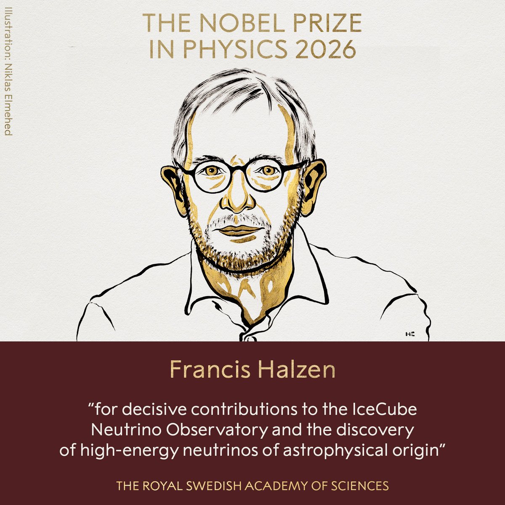</p> <div style="font-size: 16px; line-height: 1.2"><font size="3" class="credit">[Niklas Elmehed, Nobel Prize Outreach]</font></div> </div> <div style="width: 56%; font-size: 1.5em"> <h4 style="margin: 0 0 18px 0">• Born 1944, Belgium; PhD Louvain, 1969</h4> <h4 style="margin: 0 0 18px 0">• Particle theorist @ CERN, then Wisconsin-Madison</h4> <h4 style="margin: 0 0 18px 0">• Co-wrote textbook <i>Quarks and Leptons</i> (1984)</h4> <div class="fragment"> <h4 style="margin: 0 0 18px 0">• <span style="color: cyan">1988</span>: Idea: use Antarctic to search for neutrinos</h4> <h4 style="margin: 0 0 18px 0">• <span style="color: cyan">2001</span>: Leads IceCube neutrino observatory</h4> </div> <div class="fragment"> <h4 style="margin: 0">• <span style="color: cyan">2026</span>: Nobel prize in physics</h4> <h4 style="margin: 0"> • 5th Nobel for neutrinos</h4> <h4 style="margin: 0"> • First solo since 1992</h4> </div> </div> </div> <div class="fragment" style="margin-top: 30px; text-align: center"> <h4 style="margin: 0"><i>"I always thought it was a bad idea — I still think so — to have a theorist trying to lead an experiment. But actually, in practice, it worked very well. At different stages, I tried to get rid of this job and it never worked."</i></h4> <div class="credit" style="font-size: 0.45em">[Halzen for <a href="https://www.aip.org/history/halzen-solo-nobel">AIP, 2026</a>]</div> </div>
# The cosmic-ray problem <div style="text-align: center; float: right; width: 42%"> <br> <div class="r-stack"> <div class="fragment fade-out" data-fragment-index="1" style="width: 100%"> <div style="font-size: 16px; line-height: 1.2"><font size="3" class="credit">Victor Hess, 1912 [VF Hess Society]</font></div> </div> <div class="fragment fade-in" data-fragment-index="1" style="width: 100%"> <p>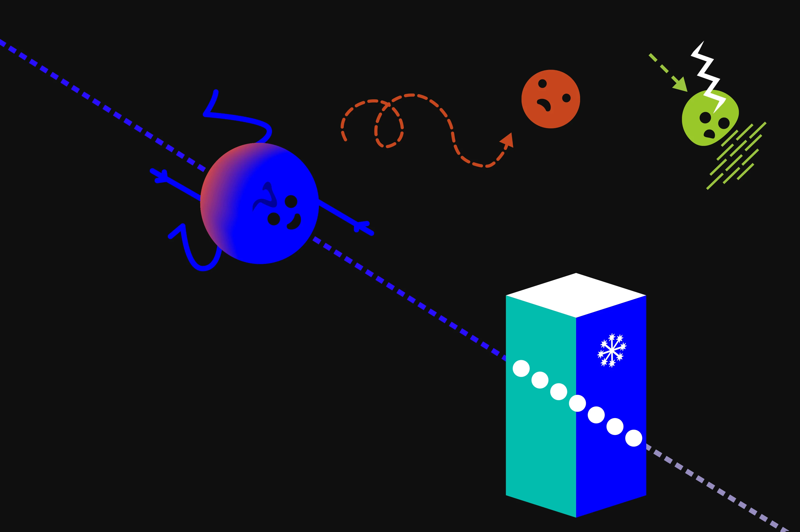</p> <div style="font-size: 16px; line-height: 1.2"><font size="3" class="credit">[© Johan Jarnestad / The Royal Swedish Academy of Sciences]</font></div> <div class="fragment" data-fragment-index="2"> <div style="font-size: 16px; line-height: 1.2"><font size="3" class="credit">[E.T. / Universal City Studios]</font></div> </div> </div> </div> </div> <div style="text-align: left; float: left; width: 56%; font-size: 1.5em"> <br> <div style="margin-bottom: 30px"> <h3 style="margin: 0 0 6px 0"><span style="color: cyan">1912</span> <b>Cosmic rays</b> <span style="color: #ccc">1936</span></h3> <h4 style="margin: 0"> • Particles from space, up to $10^{20}$ eV ($\gg$ LHC)</h4> <h4 style="margin: 0"> • 100+ years on: sources still not understood</h4> </div> <br> <div class="fragment" data-fragment-index="1" style="margin-bottom: 30px"> <h3 style="margin: 0 0 6px 0"><span style="color: cyan">The problem</span> <b>No direction information</b></h3> <h4 style="margin: 0"> • Charged: scatter, bent by magnetic fields in space</h4> </div> <br> <div class="fragment" data-fragment-index="2"> <h3 style="margin: 0 0 6px 0"><span style="color: cyan">Neutrinos</span> <b>Point home</b></h3> <h4 style="margin: 0"> • Born where protons hit gas or light: $p \to \pi^\pm \to \nu$</h4> <h4 style="margin: 0"> • Neutral and <i>extremely</i> weakly interacting</h4> <h4 style="margin: 0"> • They point back to the source</h4> </div> <h4 class="fragment" data-fragment-index="3" style="margin: 0"> • But how to find a ghost?</h4> </div>
# IceCube Neutrino Observatory <div style="height: 20px"></div> <div style="display: flex; align-items: flex-start; gap: 30px; text-align: left"> <div style="width: 60%; flex-shrink: 0; text-align: center"> <p>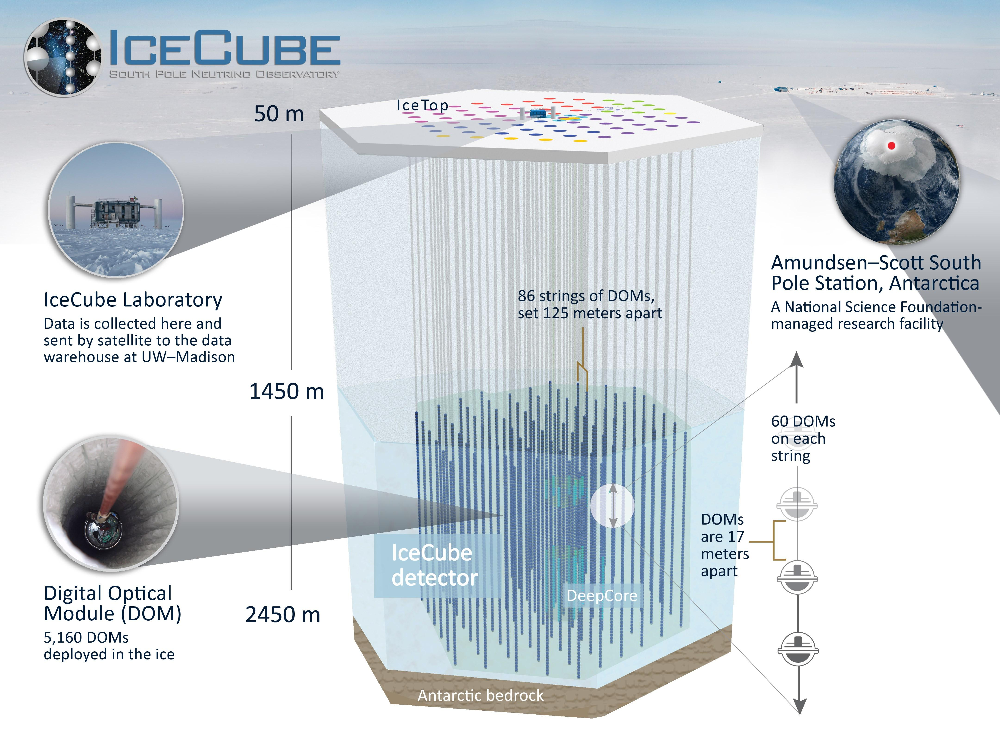</p> <div style="font-size: 16px; line-height: 1.2"><font size="3" class="credit">[IceCube/NSF]</font></div> </div> <div style="font-size: 1.5em"> <h4 style="margin: 0 0 14px 0; padding-left: 0.8em; text-indent: -0.8em">• A km$^3$ of ice, 1.5–2.5 km down</h4> <h4 style="margin: 0 0 20px 0; padding-left: 0.8em; text-indent: -0.8em">• 1 billion (++) tonne detector</h4> <h4 style="margin: 0 0 14px 0; padding-left: 0.8em; text-indent: -0.8em">• 5,160 light sensors on 86 strings</h4> <div class="fragment"> <h4 style="margin: 0; padding-left: 0.8em; text-indent: -0.8em">• Rarely, a neutrino hits a nucleus: a flash of Cherenkov light</h4> </div> <div class="fragment" style="margin-top: 24px"> <h4 style="margin: 0 0 10px 0; color: cyan">Main results:</h4> <h4 style="margin: 0 0 8px 0; padding-left: 0.8em; text-indent: -0.8em">• <span style="color: cyan">2013</span>: Extragalactic Neutrinos</h4> <h4 style="margin: 0 0 8px 0; padding-left: 0.8em; text-indent: -0.8em">• <span style="color: cyan">2017</span>: The first source: a blazar</h4> <h4 style="margin: 0 0 8px 0; padding-left: 0.8em; text-indent: -0.8em">• <span style="color: cyan">2022</span>: An active galaxy</h4> <h4 style="margin: 0 0 8px 0; padding-left: 0.8em; text-indent: -0.8em">• <span style="color: cyan">2023</span>: The Milky Way in neutrinos</h4> <h4 style="margin: 0; padding-left: 0.8em; text-indent: -0.8em">• <span style="color: cyan">Also</span>: oscillations, dark matter, supernovae, geophysics</h4> </div> </div> </div>
# History of neutrinos ### _(our point of view)_ <div style="text-align: center; float: right; width: 42%; position: relative; top: -40px"> <br> <br> <div class="r-stack"> <div class="fragment fade-out" data-fragment-index="4" style="width: 100%"> <div class="fragment fade-in" data-fragment-index="1"> <div style="position: relative; width: 85%; margin: 15px auto 1px auto"> <p>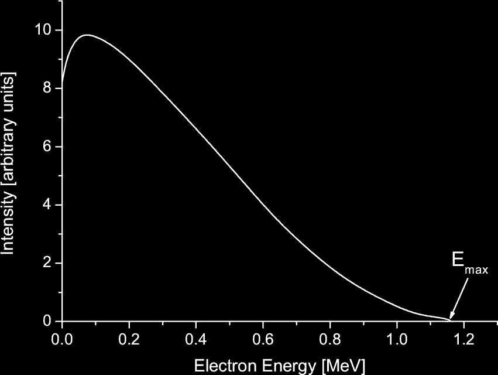</p> <p>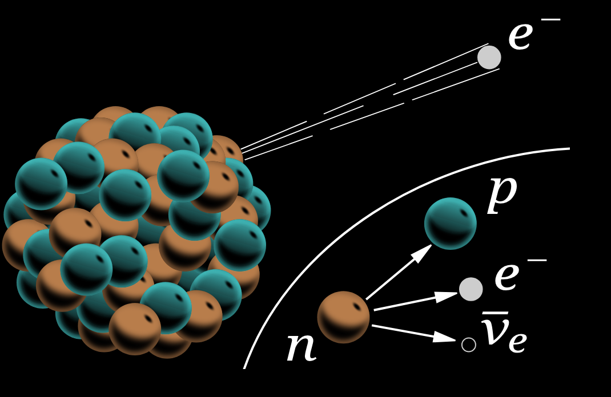</p> </div> <div style="font-size: 16px; line-height: 1.2"><font size="3" class="credit"> [F Klemm + Inductiveload/ Wikimedia Commons] </font></div> </div> <div class="fragment fade-in" data-fragment-index="3"> <div style="display: flex; justify-content: center; gap: 40px"> <div> <br> <p>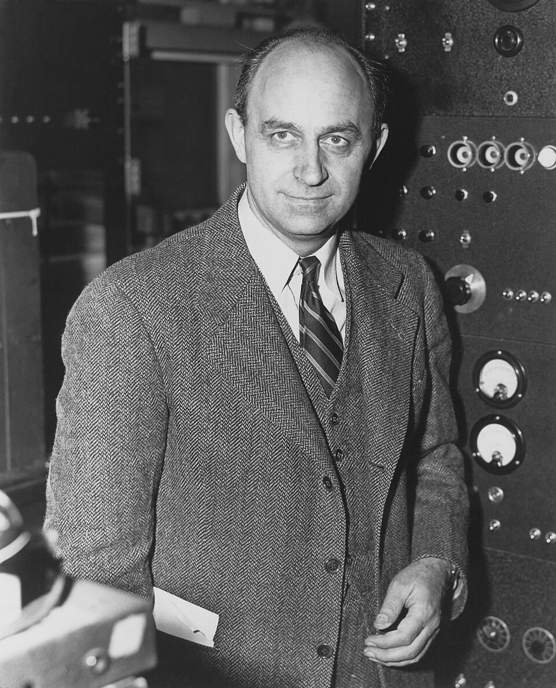</p> <div style="font-size: 16px; line-height: 1.2"><font size="3" class="credit">[US Dept. of Energy]</font></div> </div> <div style="height: 320px; margin-top: 15px; display: flex; flex-direction: column; justify-content: space-between; align-items: center"> <br> <div>\[\mathcal{L}_{\rm F} = -G_F\,(\bar\psi_p\gamma^\mu\psi_n)(\bar\psi_e\gamma_\mu\psi_\nu)\]</div> <p>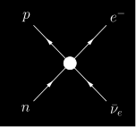</p> </div> </div> </div> </div> <div class="fragment fade-out" data-fragment-index="6" style="width: 100%"> <div class="fragment fade-in" data-fragment-index="4"> <p>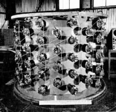</p> <div style="font-size: 16px; line-height: 1.2"><font size="3" class="credit">Cowan & Reines Scintillator [Los Alamos Nat. Lab.]</font></div> <div class="fragment fade-in" data-fragment-index="5"> <p>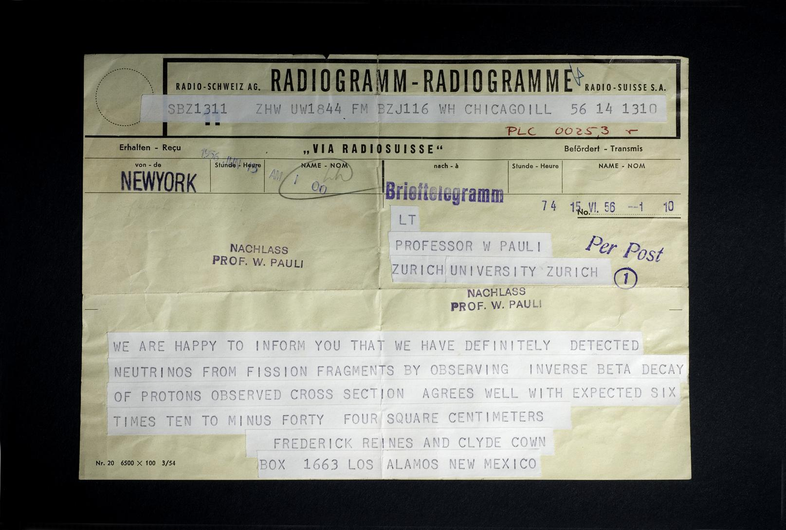</p> <div style="font-size: 16px; line-height: 1.2"><font size="3" class="credit">[Reines & Cowan to Pauli, June 1956: CERN Pauli Archive]</font></div> </div> </div> </div> <div class="fragment fade-out" data-fragment-index="7" style="width: 100%"> <div class="fragment fade-in" data-fragment-index="6"> <div style="display: flex; justify-content: center; gap: 20px"> <div style="width: 40%"> <div style="font-size: 13px; line-height: 1.2"><font size="2" class="credit">[U. Chicago]</font></div> </div> <div style="width: 40%"> <div style="font-size: 13px; line-height: 1.2"><font size="2" class="credit">[Columbia]</font></div> </div> </div><br> <p>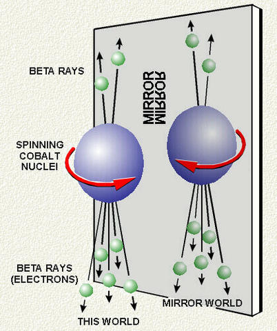</p> <div style="font-size: 13px; line-height: 1.2"><font size="2" class="credit">[Smithsonian]</font></div> </div> </div> <div class="fragment fade-out" data-fragment-index="8" style="width: 100%"> <div class="fragment fade-in" data-fragment-index="7"> <div style="width: 50%; margin: 0 auto"> <div style="font-size: 16px; line-height: 1.15"><font size="3" class="credit">Melvin Schwartz [Brookhaven Nat. Lab.]</font></div> </div> <p>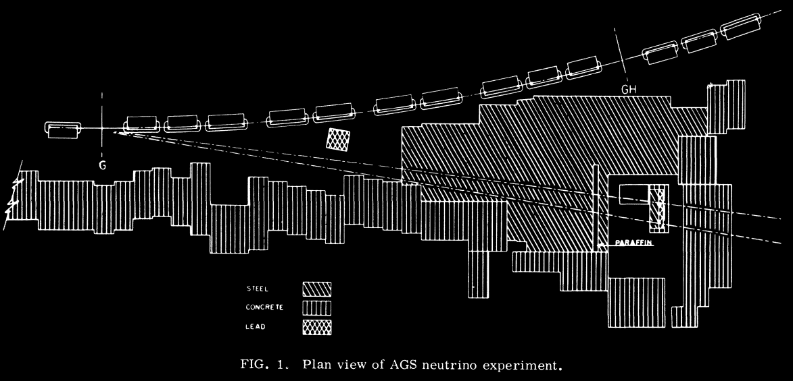</p> </div> </div> <div class="fragment fade-out" data-fragment-index="9" style="width: 100%"> <div class="fragment fade-in" data-fragment-index="8"> <div style="display: flex; justify-content: center; gap: 20px"> <div style="width: 26%"> <div style="font-size: 13px; line-height: 1.2"><font size="2" class="credit">Glashow</font></div> </div> <div style="width: 26%"> <div style="font-size: 13px; line-height: 1.2"><font size="2" class="credit">Salam</font></div> </div> <div style="width: 26%"> <div style="font-size: 13px; line-height: 1.2"><font size="2" class="credit">Weinberg</font></div> </div> </div> <div style="font-size: 13px; line-height: 1.2"><font size="2" class="credit">[© Nobel Foundation]</font></div> <p>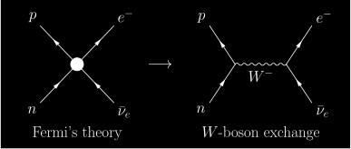</p> </div> </div> <div class="fragment fade-out" data-fragment-index="10" style="width: 100%"> <div class="fragment fade-in" data-fragment-index="9"> <p>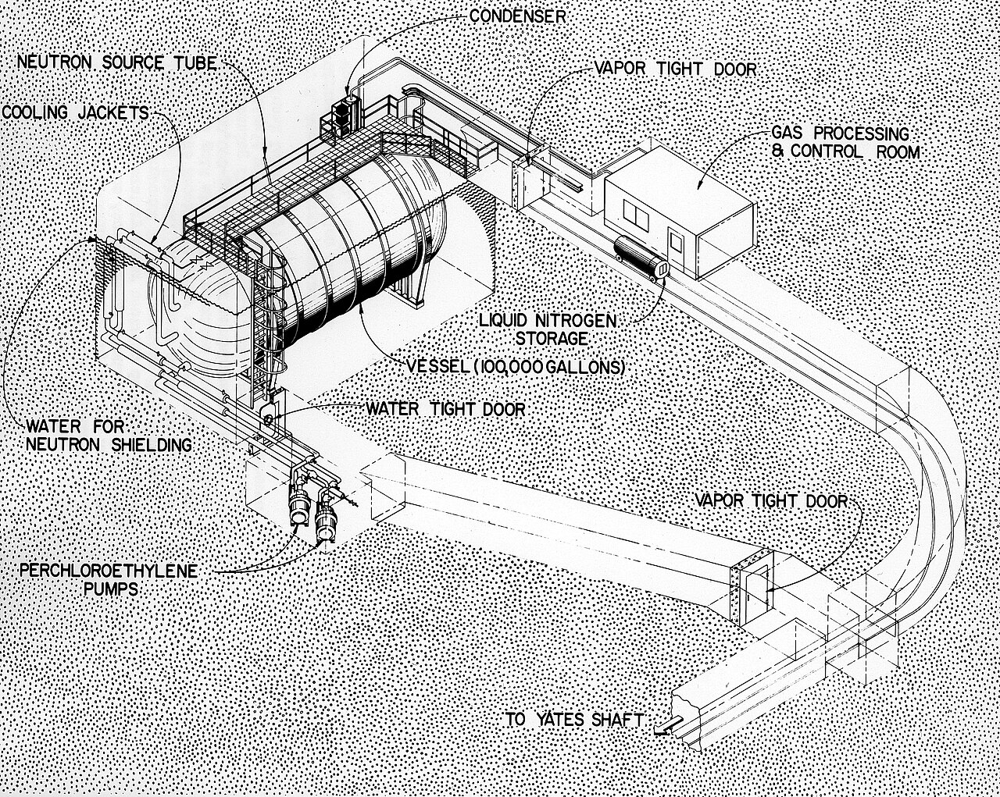</p> <div style="font-size: 16px; line-height: 1.2"><font size="3" class="credit">[Brookhaven Nat. Lab.]</font></div> <p>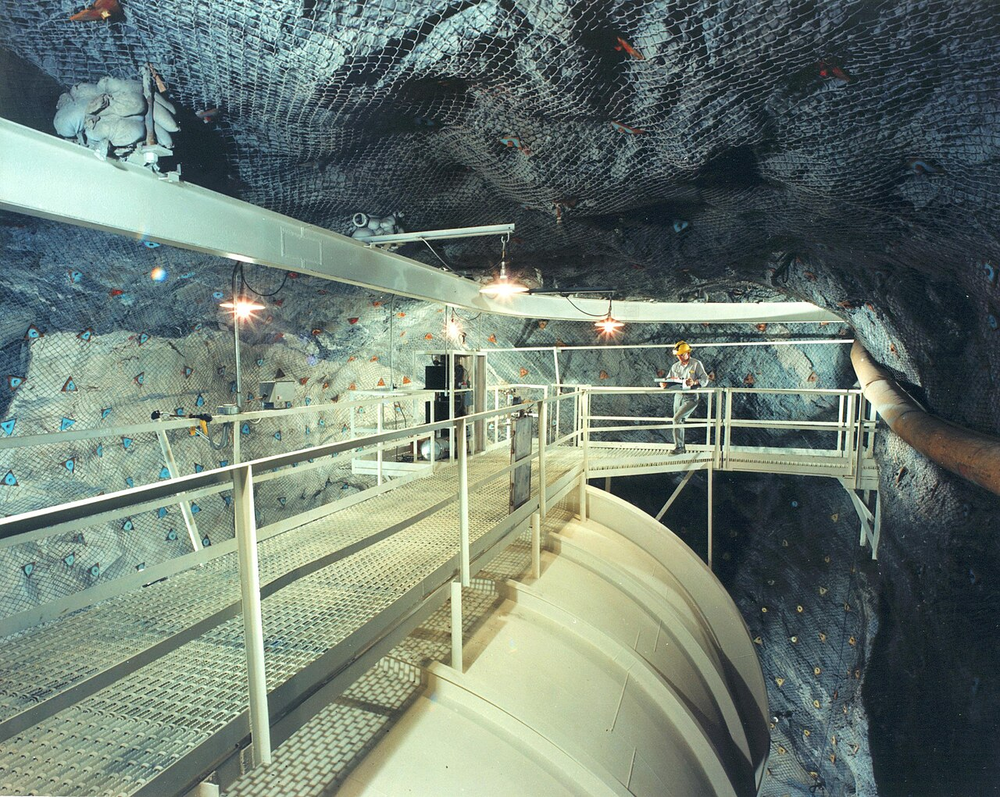</p> <div style="font-size: 16px; line-height: 1.2"><font size="3" class="credit">[US Dept. Energy]</font></div> </div> </div> <div class="fragment fade-out" data-fragment-index="11" style="width: 100%"> <div class="fragment fade-in" data-fragment-index="10"> <p>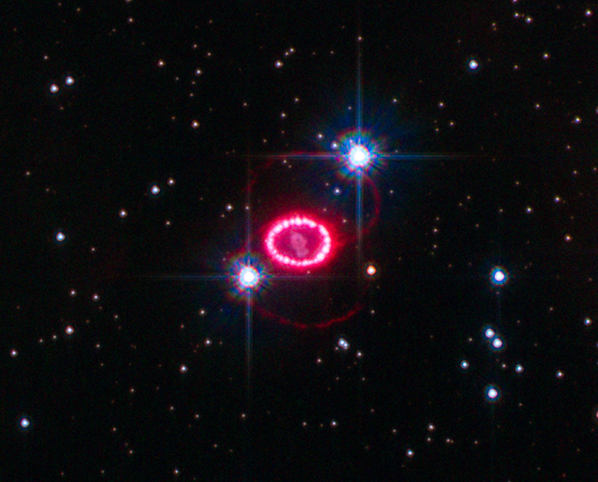</p> <div style="font-size: 16px; line-height: 1.2"><font size="3" class="credit">[Hubble]</font></div> <div style="display: flex; justify-content: center; align-items: center; gap: 20px"> <!-- <p>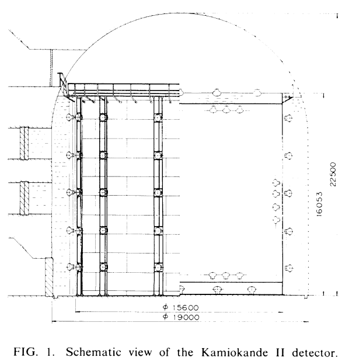</p> --> <p>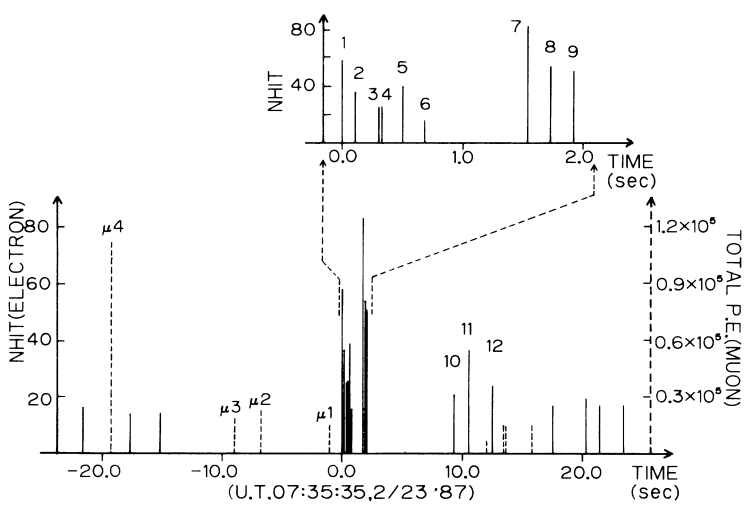</p> </div><br> <div style="font-size: 16px; line-height: 1.2"><font size="3" class="credit">[Hirata <i>et al.</i>, <a href="https://journals.aps.org/prl/pdf/10.1103/PhysRevLett.58.1490">Phys. Rev. Lett. <b>58</b>, 1490 (1987)</a>]</font></div> </div> </div> <div class="fragment fade-out" data-fragment-index="12" style="width: 100%"> <div class="fragment fade-in" data-fragment-index="11"> <p>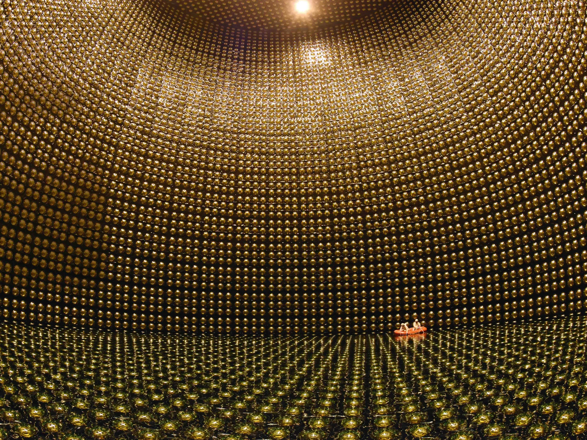</p> <div style="font-size: 16px; line-height: 1.2"><font size="3" class="credit">[Super-Kamiokande]</font></div> </div> </div> <div class="fragment fade-in" data-fragment-index="12" style="width: 100%"> <p>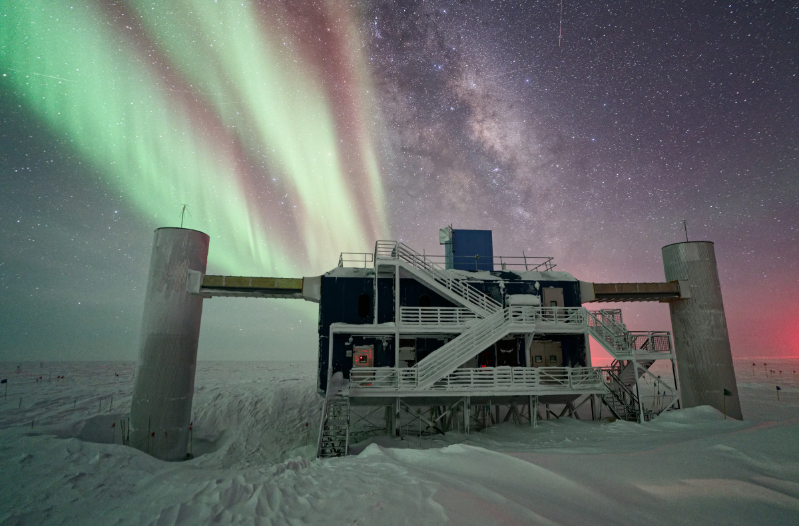</p> <div style="font-size: 16px; line-height: 1.2"><font size="3" class="credit">[Ilya Bodo / IceCube/NSF]</font></div><br> <!-- <div style="font-size: 16px; line-height: 1.2"><font size="3" class="credit">[icecube.wisc.edu]</font></div> --> </div> </div> </div> <div style="text-align: left; float: left; width: 56%; font-size: 1.125em"> <div class="fragment" data-fragment-index="1" style="margin-bottom: 26px"> <h3 style="margin: 0 0 6px 0; font-size: 1.33em"><span style="color: cyan">1930</span> <b>Theorised</b> <i style="font-size: 0.7em">"Dear Radioactive Ladies and Gentlemen, ..."</i></h3> <div class="fragment fade-out fold-away" data-fragment-index="3"> <h4 style="margin: 0 0 10px 40px">• Pauli: "desperate remedy": undetectable neutral particle</h4> <h4 style="margin: 0 0 10px 40px">• Explain energy conservation in RaE (Bi) $\beta$ decay</h4> <h4 class="fragment" data-fragment-index="2" style="margin: 0 0 10px 80px"><i style="font-size: 0.9em">"Unfortunately, I cannot appear in Tubingen personally since I am indispensable here in Zurich because of a ball"</i></h4> </div> </div> <div class="fragment" data-fragment-index="3" style="margin-bottom: 26px"> <h3 style="margin: 0 0 6px 0; font-size: 1.33em"><span style="color: cyan">1933</span> <b>Fermi theory</b></h3> <div class="fragment fade-out fold-away" data-fragment-index="4"> <h4 style="margin: 0 0 0px 40px">• Fermi's theory of $\beta$ decay [<a href="https://doi.org/10.1007/BF01351864">Z. Phys. <b>88</b>, 161 (1934)</a>] <i style="font-size: 0.8em"></i></h4> <h5 style="margin: 0 0 0px 60px"> <i>(rejected by Nature)</i></h5> <br> <h4 style="margin: 0 0 0px 40px">• Bethe and Peierls: $\sigma \sim 10^{-44}$ cm$^2~~$ [<a href="https://www.nature.com/articles/133532a0">Nature <b>133</b>, 532 (1934)</a>]</h4> <h4 style="margin: 0 0 0px 60px"> <i>"no practically possible way of observing"</i></h4> </div> </div> <div class="fragment" data-fragment-index="4" style="margin-bottom: 26px"> <h3 style="margin: 0 0 6px 0; font-size: 1.33em"><span style="color: cyan">1956</span> <b>Detected</b> <span style="color: #ccc">1995</span></h3> <div class="fragment fade-out fold-away" data-fragment-index="6"> <h4 style="margin: 0 0 10px 40px">• Reines and Cowan [<a href="https://www.science.org/doi/10.1126/science.124.3212.103">Science <b>124</b>, 103 (1956)</a>]</h4> <h4 style="margin: 0 0 10px 40px">• Reactor $\bar\nu_e$ at Savannah River: \[\large \bar\nu_e + p \to e^+ + n\]</h4> <div class="fragment" data-fragment-index="5"> <h4 style="margin: 0 0 10px 40px">• $e^+$ annihilates: two 0.511 MeV $\gamma$ flash in the scintillator</h4> <h4 style="margin: 0 0 10px 40px">• $n$ captured on cadmium µs later: a second $\gamma$ flash</h4> </div> </div> </div> <div class="fragment" data-fragment-index="6" style="margin-bottom: 26px"> <h3 style="margin: 0 0 6px 0; font-size: 1.33em"><span style="color: cyan">1957</span> <b>Parity violation</b> <span style="color: #ccc">1957</span></h3> <div class="fragment fade-out fold-away" data-fragment-index="7"> <h4 style="margin: 0 0 10px 40px">• Lee and Yang [<a href="https://journals.aps.org/pr/abstract/10.1103/PhysRev.104.254">Phys. Rev. <b>104</b>, 254 (1956)</a>]</h4> <h4 style="margin: 0 0 10px 40px">• C. S. Wu: $^{60}$Co $\beta$ decay [<a href="https://journals.aps.org/pr/abstract/10.1103/PhysRev.105.1413">Phys. Rev. <b>105</b>, 1413 (1957)</a>]</h4> </div> </div> <div class="fragment" data-fragment-index="7" style="margin-bottom: 26px"> <h3 style="margin: 0 0 6px 0; font-size: 1.33em"><span style="color: cyan">1962</span> <b>Now in more flavours</b> <span style="color: #ccc">1988</span></h3> <div class="fragment fade-out fold-away" data-fragment-index="8"> <h4 style="margin: 0 0 10px 40px">• $\nu_\mu \neq \nu_e$ at Brookhaven [<a href="https://journals.aps.org/prl/abstract/10.1103/PhysRevLett.9.36">Phys. Rev. Lett. <b>9</b>, 36 (1962)</a>]</h4> <h4 style="margin: 0 0 10px 40px">• Pions decay to $\nu$</h4> <h4 style="margin: 0 0 10px 40px">• 13 m of steel shielding (old battleships)</h4> <h4 style="margin: 0 0 10px 40px">• Spark chamber observes muons, never electrons: new type \[\large \pi^+ \to \mu^+ + \nu_\mu, \qquad \nu_\mu + n \to \mu^- + p\]</h4> <h4 style="margin: 0 0 10px 40px">• Doublet structure of leptons</h4> <h4 style="margin: 0 0 10px 40px">• $\nu_\tau$ at Fermilab (DONUT), 2000 [<a href="https://doi.org/10.1016/S0370-2693(01)00307-0">Phys. Lett. B <b>504</b>, 218 (2001)</a>]</h4> </div> </div> <div class="fragment" data-fragment-index="8" style="margin-bottom: 26px"> <h3 style="margin: 0 0 6px 0; font-size: 1.33em"><span style="color: cyan">1967</span> <b>Electroweak theory</b> <span style="color: #ccc">1979</span></h3> <div class="fragment fade-out fold-away" data-fragment-index="9"> <h4 style="margin: 0 0 0px 40px">• Glashow, Salam, Weinberg: electroweak unification</h4> <h4 style="margin: 0 0 0px 40px">• Carried by $W^\pm$, $Z$ [<a href="https://journals.aps.org/prl/abstract/10.1103/PhysRevLett.19.1264">Phys. Rev. Lett. <b>19</b>, 1264 (1967)</a>]</h4> <h4 style="margin: 0 0 0px 40px">• Mass from the Higgs (1964)</h4> <h4 style="margin: 0 0 10px 40px">• But $\nu$ only left-handed: so $m_\nu = 0$</h4> </div> </div> <div class="fragment" data-fragment-index="9" style="margin-bottom: 26px"> <h3 style="margin: 0 0 6px 0; font-size: 1.33em"><span style="color: cyan">1968, 1987</span> <b>The Sun and a supernova</b> <span style="color: #ccc">2002</span></h3> <div class="fragment fade-out fold-away" data-fragment-index="11"> <h4 style="margin: 0 0 0px 40px">• Davis's Homestake tank: \[\large \nu_e + {}^{37}{\rm Cl} \to {}^{37}{\rm Ar} + e^-\]</h4> <h4 style="margin: 0 0 0px 40px">• Finds $\tfrac13$ of the predicted $\nu_e$ $\implies$ solar neutrino problem</h4> <h4 class="fragment" data-fragment-index="10" style="margin: 0 0 10px 40px">• SN1987A: $\sim$25 events in 13 s (Kamiokande-II, IMB, Baksan): <br> $~\implies$ neutrino astronomy works</h4> </div> </div> <div class="fragment" data-fragment-index="11" style="margin-bottom: 26px"> <h3 style="margin: 0 0 6px 0; font-size: 1.33em"><span style="color: cyan">1998–2002</span> <b>Oscillating, so massive</b> <span style="color: #ccc">2015</span></h3> <div class="fragment fade-out fold-away" data-fragment-index="12"> <h4 style="margin: 0 0 0px 40px">• Super-K (atmospheric) and SNO (solar)</h4> <h4 style="margin: 0 0 10px 40px">• Flavours change in flight</h4> </div> </div> <div class="fragment" data-fragment-index="12" style="margin-bottom: 26px"> <h3 style="margin: 0 0 6px 0; font-size: 1.33em"><span style="color: cyan">2013</span> <b>From the cosmos</b> <span style="color: #ccc">2026</span></h3> <h4 style="margin: 0 0 10px 40px">• IceCube: TeV–PeV neutrinos from beyond the Galaxy</h4> </div> </div>
# History of neutrinos ### _(their point of view)_ <div style="text-align: left; float: left; width: calc(40% + 50px); margin-left: -50px; font-size: 1.125em"> <div class="fragment" data-fragment-index="1" style="margin-bottom: 26px"> <h3 style="margin: 0 0 6px 0; font-size: 1.33em"><span style="color: cyan">$t < 1$ s</span> <b>In equilibrium</b></h3> <div class="fragment fade-out fold-away" data-fragment-index="2"> <h4 style="margin: 0 0 10px 40px">• $T > 1$ MeV: weak reactions \[\large \nu\bar\nu \leftrightarrow e^+e^-, \qquad \nu e \leftrightarrow \nu e\]</h4> <h4 style="margin: 0 0 10px 40px">• Keep neutrinos thermal with everything else</h4> </div> </div> <div class="fragment" data-fragment-index="2" style="margin-bottom: 26px"> <h3 style="margin: 0 0 6px 0; font-size: 1.33em"><span style="color: cyan">$t \approx 1$ s</span> <b>Freeze-out</b></h3> <div class="fragment fade-out fold-away" data-fragment-index="3"> <h4 style="margin: 0 0 10px 40px">• $\Gamma \sim G_F^2 T^5$ falls below $H \sim T^2/M_{\rm Pl}$</h4> <h4 style="margin: 0 0 10px 40px">• Neutrinos decouple and free-stream ever after</h4> </div> </div> <div class="fragment" data-fragment-index="3" style="margin-bottom: 26px"> <h3 style="margin: 0 0 6px 0; font-size: 1.33em"><span style="color: cyan">$t \gtrsim$ few s</span> <b>Cosmic $\nu$ background</b></h3> <div class="fragment fade-out fold-away" data-fragment-index="4"> <h4 style="margin: 0 0 10px 40px">• $e^+e^-$ annihilation heats only the photons: \[\large T_\nu = (4/11)^{1/3}\, T_\gamma\]</h4> <h4 style="margin: 0 0 10px 40px">• Today: $T_\nu \approx 1.95$ K, $\sim$340 cm$^{-3}$</h4> <h4 style="margin: 0 0 10px 40px">• $\nu$: never touched again, but felt by gravity</h4> <h4 style="margin: 0 0 10px 40px">• 40% of the radiation, speed up the expansion</h4> <h4 style="margin: 0 0 10px 40px">• Expansion rate counts species: $N_{\rm eff}$</h4> <!-- <h4 style="margin: 0 0 10px 40px">• Structure growth ($\sum m_\nu \lesssim 0.1$ eV)</h4> --> </div> </div> <div class="fragment" data-fragment-index="4" style="margin-bottom: 26px"> <h3 style="margin: 0 0 6px 0; font-size: 1.33em"><span style="color: cyan">$t \approx 3$ min</span> <b>Light elements (BBN)</b></h3> <div class="fragment fade-out fold-away" data-fragment-index="5"> <h4 style="margin: 0 0 10px 40px">• $\nu_e$ swap $n \leftrightarrow p$ until 1 s</h4> <h4 style="margin: 0 0 10px 40px">• By 3 min, $n/p \approx 1/7$</h4> <h4 style="margin: 0 0 10px 40px">• Nearly all neutrons $\to$ $^4$He: 25% by mass</h4> <h4 style="margin: 0 0 10px 40px">• More species, faster expansion, more He</h4> <h4 style="margin: 0 0 10px 40px">• Limitted in 1977, before LEP found 3</h4> </div> </div> <div class="fragment" data-fragment-index="5" style="margin-bottom: 26px"> <h3 style="margin: 0 0 6px 0; font-size: 1.33em"><span style="color: cyan">$\gtrsim 10^8$ yr</span> <b>Stars</b></h3> <div class="fragment fade-out fold-away" data-fragment-index="6"> <h4 style="margin: 0 0 10px 40px">• Two $\nu_e$ per $^4$He made</h4> <h4 style="margin: 0 0 10px 40px">• The Sun emits $2\times10^{38}$ $\nu$/s</h4> <h4 style="margin: 0 0 10px 40px">• 65 billion cross your thumbnail each second</h4> <h4 style="margin: 0 0 10px 40px">• Super-K sees only $^8$B: 1 in $10^4$</h4> </div> </div> <div class="fragment" data-fragment-index="6" style="margin-bottom: 26px"> <h3 style="margin: 0 0 6px 0; font-size: 1.33em"><span style="color: cyan">Core collapse</span> <b>Supernovae</b></h3> <div class="fragment fade-out fold-away" data-fragment-index="7"> <h4 style="margin: 0 0 10px 40px">• 99% of energy leaves as $10^{58}$ neutrinos in $\sim$10 s</h4> </div> </div> <div class="fragment" data-fragment-index="7" style="margin-bottom: 26px"> <h3 style="margin: 0 0 6px 0; font-size: 1.33em"><span style="color: cyan">Also</span> <b>Everything else</b></h3> <div data-fragment-index="8"> <h4 style="margin: 0 0 10px 40px">• Earth's radioactivity, reactors</h4> <h4 style="margin: 0 0 10px 40px">• Cosmic-ray showers</h4> <h4 style="margin: 0 0 10px 40px">• Cosmic accelerators (TeV–PeV)</h4> <!-- <h4 style="margin: 0 0 10px 40px">• The still-unseen EeV cosmogenic (GZK) flux</h4> --> </div> </div> </div> <div style="text-align: center; float: right; width: 58%"> <div class="r-stack"> <div class="fragment fade-out" data-fragment-index="4" style="width: 100%"> <p>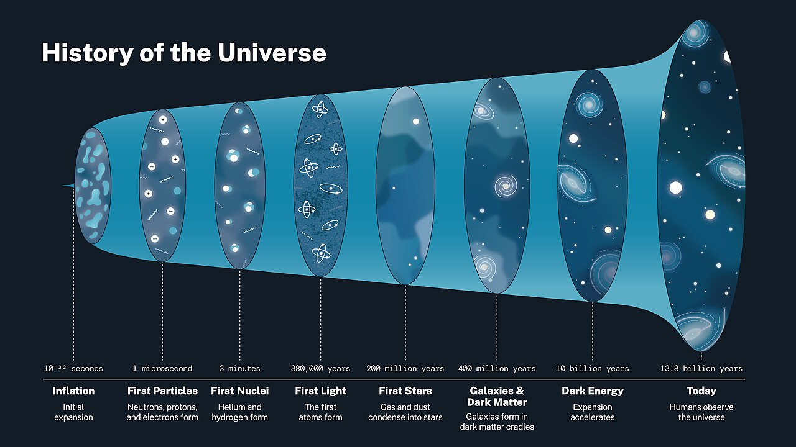</p> <div style="font-size: 16px; line-height: 1.2"><font size="3" class="credit">[NASA]</font></div> </div> <div class="fragment fade-in-then-out" data-fragment-index="4" style="width: 100%"> <p>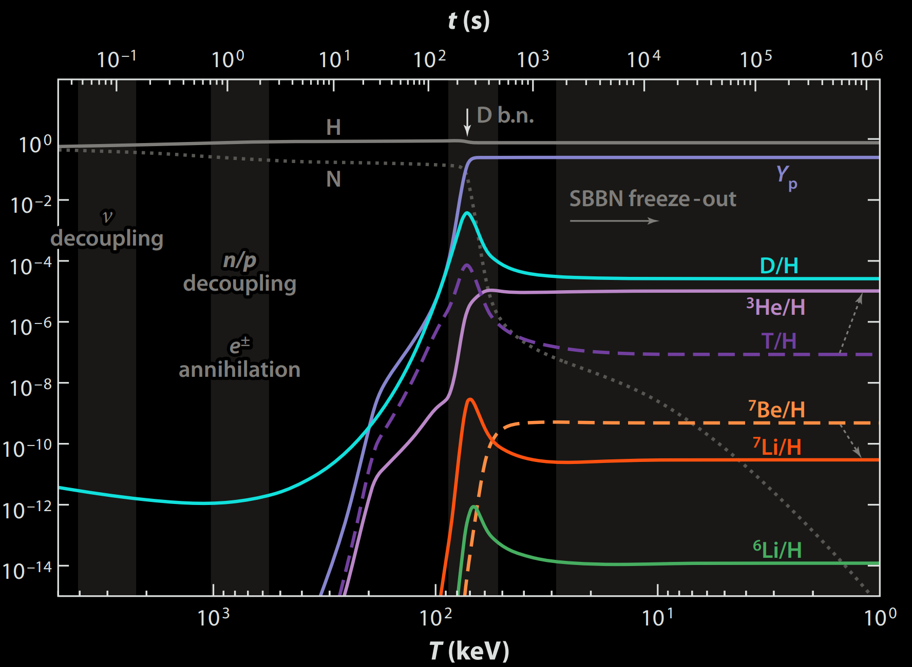</p> <div style="font-size: 16px; line-height: 1.2"><font size="3" class="credit">[Pospelov & Pradler, <a href="https://doi.org/10.1146/annurev.nucl.012809.104521">Annu. Rev. Nucl. Part. Sci. <b>60</b>, 539 (2010)</a>]</font></div> </div> <div class="fragment fade-in-then-out" data-fragment-index="5" style="width: 100%"> <p>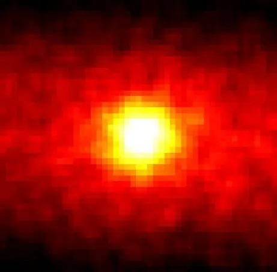</p> <div style="font-size: 16px; line-height: 1.2"><font size="3" class="credit">The Sun in neutrinos: 500 days of Super-Kamiokande [R. Svoboda & K. Gordan (LSU), <a href="https://apod.nasa.gov/apod/ap980605.html">APOD, 5 June 1998</a>]</font></div> </div> <div class="fragment fade-in" data-fragment-index="6" style="width: 100%"> <p>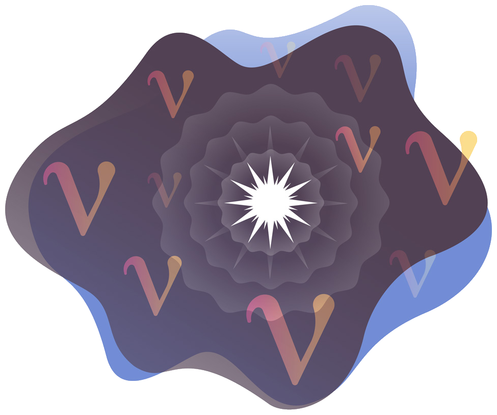</p> <div style="font-size: 16px; line-height: 1.2"><font size="3" class="credit">[Fermilab]</font></div> </div> </div> <div class="r-stack" style="margin-top: 24px"> <div class="fragment fade-out" data-fragment-index="4" style="width: 100%"> <div class="fragment fade-in" data-fragment-index="1"> <p>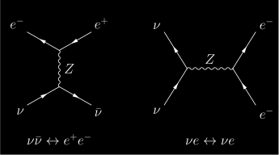</p> </div> </div> <div class="fragment fade-out" data-fragment-index="5" style="width: 100%"> <div class="fragment fade-in" data-fragment-index="4"> <p>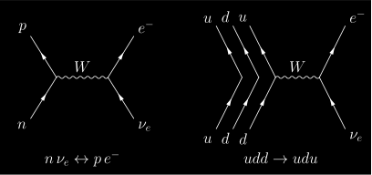</p> </div> </div> <div class="fragment fade-in-then-out" data-fragment-index="5" style="width: 100%"> <p>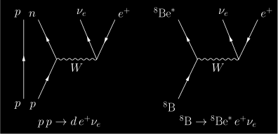</p> </div> </div> </div>
<br><br><br><br><br><br><br><br> # Why a cubic kilometre
# The neutrino sky ### How many neutrinos, at each energy <div style="display: flex; align-items: center; gap: 30px; text-align: left"> <div style="width: 45%; flex-shrink: 0; text-align: center"> <div style="position: relative; display: inline-block; width: 100%; margin: 10px auto 1px auto"> <p>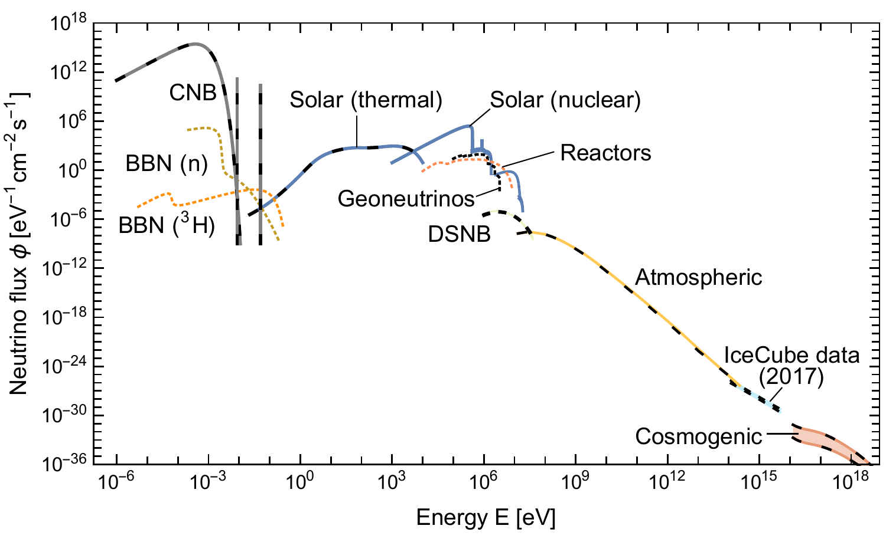</p> <div class="fragment" data-fragment-index="1" style="position: absolute; left: 42%; top: 17%; width: 19%; height: 26%; border: 5px solid #ffcc00; border-radius: 50%; box-sizing: border-box"></div> <div class="fragment" data-fragment-index="2" style="position: absolute; left: 79%; top: 61%; width: 14%; height: 19%; border: 5px solid #ff5050; border-radius: 50%; box-sizing: border-box"></div> </div> <div style="font-size: 16px; line-height: 1.2"><font size="3" class="credit">[Vitagliano, Tamborra & Raffelt, <a href="https://journals.aps.org/rmp/abstract/10.1103/RevModPhys.92.045006">Rev. Mod. Phys. <b>92</b>, 045006 (2020)</a>]</font></div> </div> <div style="font-size: 1.5em"> <div class="fragment" data-fragment-index="1" style="margin-bottom: 24px"> <h4 style="margin: 0; padding-left: 0.8em; text-indent: -0.8em">• <span style="color: #ffcc00">The Sun</span>: 60 billion per cm$^2$ every second</h4> <h4 style="margin: 4px 0 0 1.3em; font-size: 0.75em; padding-left: 0.7em; text-indent: -0.7em">– Seen by Homestake, Super-K, SNO, Borexino</h4> <h4 style="margin: 0 0 0 1.3em; font-size: 0.75em; padding-left: 0.7em; text-indent: -0.7em">– Proof the Sun runs on fusion, missing fraction $\implies$ $m_\nu\neq0$</h4> </div> <br> <div class="fragment" data-fragment-index="2" style="margin-bottom: 24px"> <h4 style="margin: 0; padding-left: 0.8em; text-indent: -0.8em">• <span style="color: #ff5050">The cosmos</span>, above 100 TeV: one per m$^2$ a year</h4> <h4 style="margin: 4px 0 0 1.3em; font-size: 0.75em; padding-left: 0.7em; text-indent: -0.7em">– Seen by IceCube; now also KM3NeT, Baikal-GVD</h4> </div> <br> <div class="fragment" data-fragment-index="3"> <h4 style="margin: 0; padding-left: 0.8em; text-indent: -0.8em">• Each easier to catch ($\sigma \propto E$), but extremely rare</h4> <h4 style="margin: 4px 0 0 1.3em; font-size: 0.75em; padding-left: 0.7em; text-indent: -0.7em">– Expected: about 10 a year per km$^3$</h4> <div class="credit" style="font-size: 0.45em; margin-left: 2.2em">[Waxman & Bahcall, <a href="https://doi.org/10.1103/PhysRevD.59.023002">Phys. Rev. D <b>59</b>, 023002 (1999)</a>]</div> </div> </div> </div>
# The first neutrino telescopes <div style="text-align: center; float: right; width: 42%"> <div style="display: flex; justify-content: center; align-items: flex-end; gap: 40px"> <div> <div style="font-size: 16px; line-height: 1.2"><font size="3" class="credit">Moisey Markov [Wikimedia Commons]</font></div> </div> <div> <p>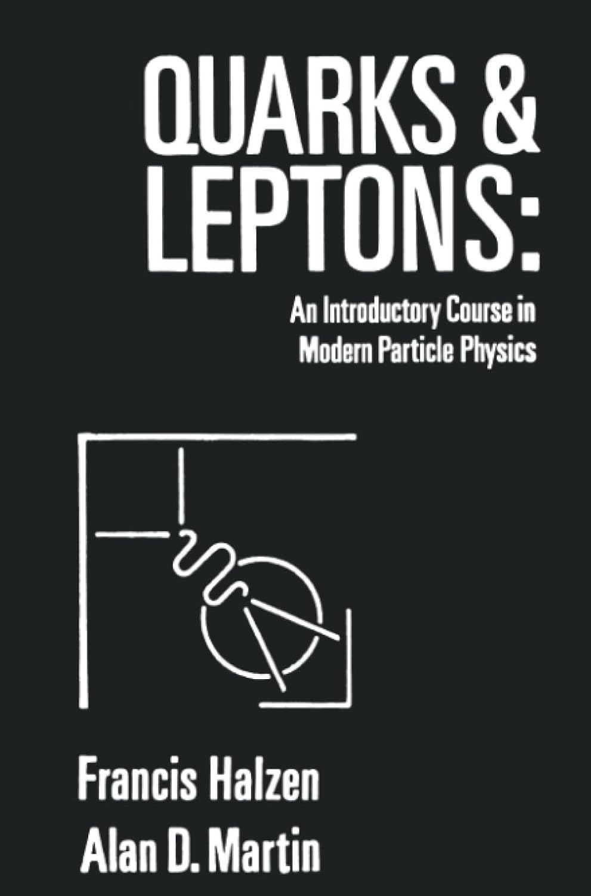</p> <div style="font-size: 16px; line-height: 1.2"><font size="3" class="credit">[Halzen & Martin, Wiley 1984]</font></div> </div> </div> <p>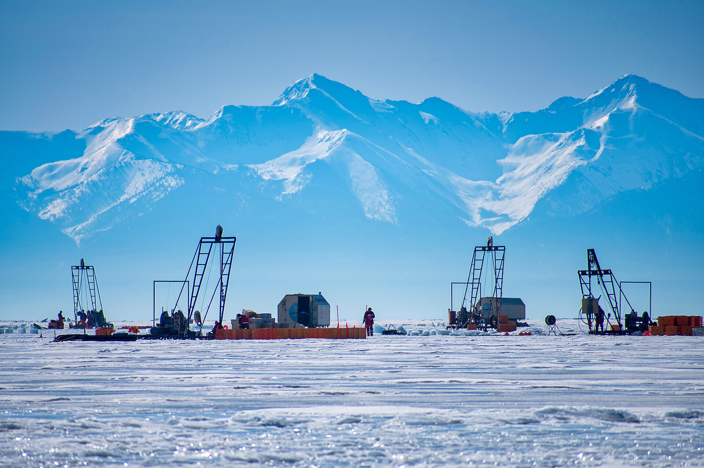</p> <div style="font-size: 16px; line-height: 1.2"><font size="3" class="credit">Baikal-GVD, deployed from the frozen lake [Bair Shaybonov / Wikimedia Commons, CC BY 4.0]</font></div> </div> <div style="text-align: left; float: left; width: 56%; font-size: 1.5em"> <br> <div style="margin-bottom: 50px"> <h3 style="margin: 0 0 6px 0"><span style="color: cyan">1960</span> <b>Markov: build it deep underwater</b></h3> <h4 style="margin: 0"> • A neutrino hit makes a flash of light</h4> <h4 style="margin: 0"> • Deep water: dark, clear, and shielded</h4> </div> <br> <div class="fragment" style="margin-bottom: 50px"> <h3 style="margin: 0 0 6px 0"><span style="color: cyan">1976–98</span> <b>Water: DUMAND fails, Baikal works</b></h3> <h4 style="margin: 0"> • DUMAND, Hawaii: 1993 string failed in 10 h</h4> <h4 style="margin: 0"> • Baikal: built from the frozen lake surface</h4> </div> <br> <div class="fragment"> <h3 style="margin: 0 0 6px 0"><span style="color: cyan">1988</span> <b>Halzen and Learned: use Antarctic ice</b></h3> <h4 style="margin: 0"> • Ice holds still: drill holes, freeze sensors in</h4> <h4 style="margin: 0"> • Exceptionally clear ice</h4> </div> </div>
# Building IceCube <div style="text-align: center; float: right; width: 42%"> <p>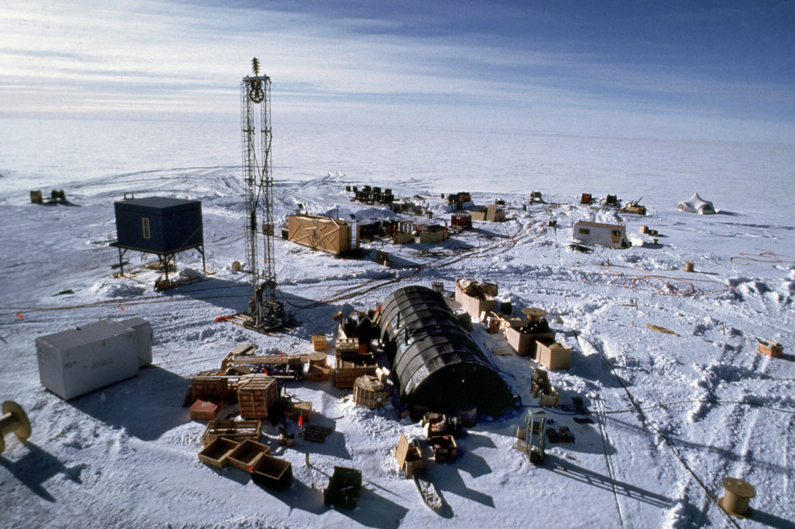</p> <div style="font-size: 16px; line-height: 1.2"><font size="3" class="credit">AMANDA drill camp, South Pole, 1990s [Robert Morse, NSF]</font></div> <div class="fragment" data-fragment-index="2"> <p>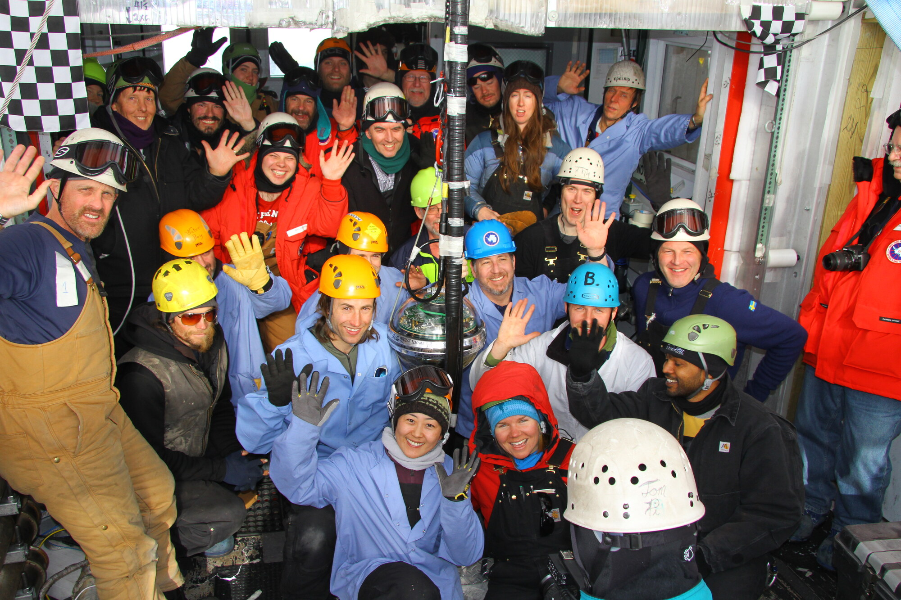</p> <div style="font-size: 16px; line-height: 1.2"><font size="3" class="credit">The last IceCube string, 18 Dec 2010 [Robert Schwarz, NSF]</font></div> </div> </div> <div style="text-align: left; float: left; width: 56%; font-size: 1.5em"> <br> <div style="margin-bottom: 50px"> <h3 style="margin: 0 0 6px 0"><span style="color: cyan">1993–94</span> <b>AMANDA: too shallow</b></h3> <h4 style="margin: 0"> • 1 km down: air bubbles scatter the light</h4> <h4 style="margin: 0"> • Light seen, but not where it came from</h4> </div> <div class="fragment" data-fragment-index="1" style="margin-bottom: 50px"> <h3 style="margin: 0 0 6px 0"><span style="color: cyan">1995–2000</span> <b>Deeper: AMANDA works</b></h3> <h4 style="margin: 0"> • Below 1.4 km the bubbles are gone</h4> <h4 style="margin: 0"> • 2 km down: the first neutrinos caught in ice</h4> <div class="credit" style="font-size: 0.45em; margin-left: 2.2em">[<a href="https://doi.org/10.1038/35068509">Nature <b>410</b>, 441 (2001)</a>]</div> </div> <div class="fragment" data-fragment-index="2"> <h3 style="margin: 0 0 6px 0"><span style="color: cyan">2010</span> <b>IceCube complete</b></h3> <h4 style="margin: 0"> • The last of 86 strings: 18 Dec 2010</h4> <h4 style="margin: 0"> • Approved 2004; cost $280 million (NSF)</h4> <h4 style="margin: 0"> • Hot-water drill: a 2.5 km hole in 2 days</h4> </div> </div>
# How IceCube sees <br> <div style="text-align: center; float: right; width: 60%; position: relative; left: 40px"> <p>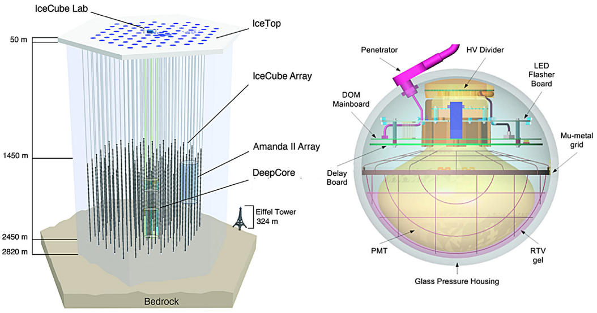</p> <div style="font-size: 16px; line-height: 1.2"><font size="3" class="credit">[IceCube/NSF]</font></div> </div> <div style="text-align: left; float: left; width: calc(40% + 50px); margin-left: -50px; font-size: 1.5em"> <div style="margin: 0 0 60px 0"> <h3 style="margin: 0 0 6px 0"><span style="color: cyan">Collision</span> <b>A neutrino hits a nucleus</b></h3> <h4 style="margin: 0 0 0 1em; padding-left: 0.8em; text-indent: -0.8em">• Produces lepton: $e$, $\mu$ or $\tau$</h4> <h4 style="margin: 0 0 0 1em; padding-left: 0.8em; text-indent: -0.8em">• Carries most of the neutrino's energy</h4> </div> <br> <div class="fragment" data-fragment-index="1" style="margin: 0 0 60px 0"> <h3 style="margin: 0 0 6px 0"><span style="color: cyan">Cherenkov</span> <b>A sonic boom of light</b></h3> <h4 style="margin: 0 0 0 1em; padding-left: 0.8em; text-indent: -0.8em">• Faster than light <i>in ice</i></h4> <h4 style="margin: 0 0 0 1em; padding-left: 0.8em; text-indent: -0.8em">• It leaves a cone of blue light, at 41°</h4> </div> <br> <div class="fragment" data-fragment-index="2"> <h3 style="margin: 0 0 6px 0"><span style="color: cyan">Sensors</span> <b>A clock and a light meter</b></h3> <h4 style="margin: 0 0 0 1em; padding-left: 0.8em; text-indent: -0.8em">• Timing ⇒ direction; light ⇒ energy</h4> <h4 style="margin: 0 0 0 1em; padding-left: 0.8em; text-indent: -0.8em">• Frozen in for good: no repairs</h4> </div> </div>
# Cherenkov light in IceCube <br> <div style="position: relative; text-align: center"> <div style="position: absolute; top: 40px; right: 0; width: 520px; text-align: left; font-size: 1.2em"> <h3 style="margin: 0 0 10px 0">• Grey lines: <br> 86 strings of light sensors</h3> <br> <h3 class="fragment" style="margin: 0 0 10px 0">• Red line: muon from a $\nu_\mu$ hit</h3> <br> <h3 class="fragment" style="margin: 0 0 10px 0">• Blue glow: <br> Cherenkov light in the ice</h3> <br> <h3 class="fragment" style="margin: 0 0 10px 0">• Sensors fire as light arrives: size = light, colour = time</h3> <br> <h3 class="fragment" style="margin: 0 0 10px 0">• Stray dots: random noise</h3> <br> <h3 class="fragment" style="margin: 0 0 10px 0">• Hit timing $\to$ direction ($\sim$1°)</h3> </div> <div style="position: relative; left: -140px"> <video data-autoplay muted style="height: 820px; max-width: 100%; margin: 0 auto 1px auto"> <source src="https://res.cloudinary.com/icecube/video/upload/v1602524605/gal_Detector_cherenkov_smaller.mp4" type="video/mp4"> </video> <div style="font-size: 16px; line-height: 1.2"><font size="3" class="credit">[IceCube]</font></div> </div> </div>
# Tracks and cascades ### _What each kind of neutrino leaves in the ice_ <div style="text-align: center; float: right; width: 46%"> <div style="display: flex; justify-content: center; align-items: flex-end; gap: 30px; margin-top: 10px"> <div> <p>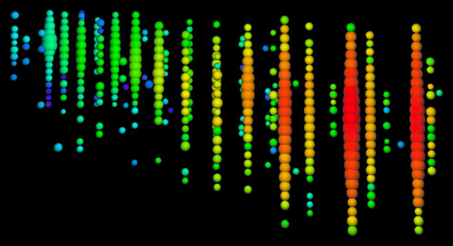</p> <div style="font-size: 18px; line-height: 1.2">Track: IceCube-170922A (2017)</div> </div> <div class="fragment" data-fragment-index="1"> <p>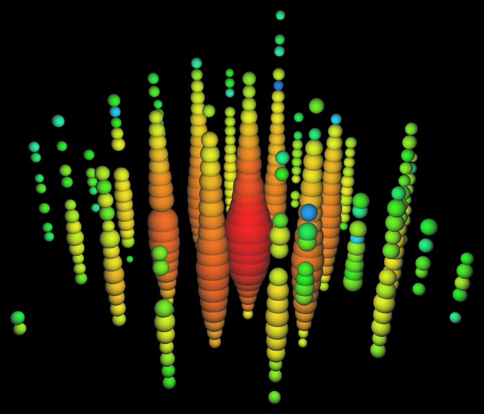</p> <div style="font-size: 18px; line-height: 1.2">Cascade: Ernie (2012)</div> </div> </div> <div style="font-size: 16px; line-height: 1.2; margin-bottom: 20px"><font size="3" class="credit">[IceCube Collaboration]</font></div> <div class="fragment" data-fragment-index="2"> <br> <p>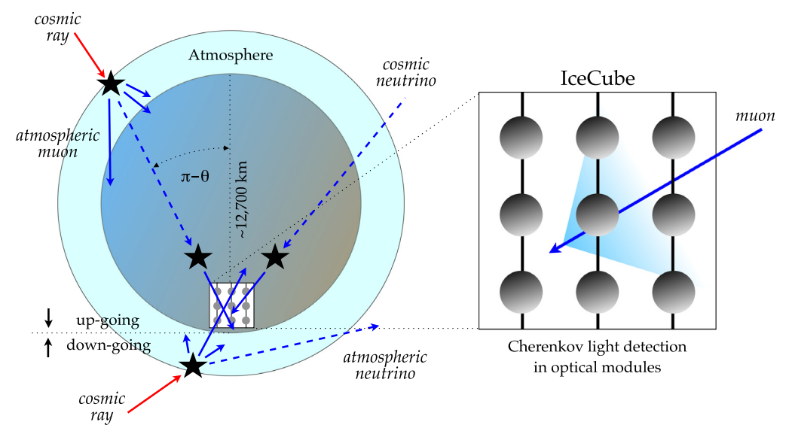</p> <div style="font-size: 16px; line-height: 1.2"><font size="3" class="credit">[Ahlers & Halzen, <a href="https://doi.org/10.1016/j.ppnp.2018.05.001">Prog. Part. Nucl. Phys. <b>102</b>, 73 (2018)</a>]</font></div> </div> </div> <div style="text-align: left; float: left; width: calc(52% + 50px); margin-left: -50px; font-size: 1.5em"> <br> <div style="margin-bottom: 30px"> <h3 style="margin: 0 0 6px 0"><span style="color: cyan">Track</span> <b>A long streak of light</b></h3> <h4 style="margin: 0; padding-left: 1.8em; text-indent: -0.8em">• $\nu_\mu \to \mu$ ($W^\pm$): the muon flies for kilometres</h4> <h4 style="margin: 0; padding-left: 1.8em; text-indent: -0.8em">• A straight line: points back to the source</h4> </div> <div class="fragment" data-fragment-index="1" style="margin-bottom: 30px"> <br> <h3 style="margin: 0 0 6px 0"><span style="color: cyan">Cascade</span> <b>A ball of light, three ways</b></h3> <h4 style="margin: 0; padding-left: 1.8em; text-indent: -0.8em">• $\nu_e \to e$ ($W^\pm$): the electron stops within metres</h4> <!-- <h4 style="margin: 0 0 0 2.6em; font-size: 0.75em; color: #ccc">– The most likely</h4> --> <h4 style="margin: 0; padding-left: 1.8em; text-indent: -0.8em">• $\nu_\tau \to \tau$ ($W^\pm$): decays in $\sim$50 m; two blobs blur</h4> <h4 style="margin: 0; padding-left: 1.8em; text-indent: -0.8em">• Any $\nu \to \nu$ ($Z$): bounces off, shatters the nucleus</h4> <!-- <h4 style="margin: 6px 0 0 1.8em; font-size: 0.75em; color: #ccc">$W^\pm$: charged current, the $\nu$ becomes its lepton. $Z$: neutral current, it stays a $\nu$</h4> --> </div> <div class="fragment" data-fragment-index="2"> <br> <h3 style="margin: 0 0 6px 0"><span style="color: cyan">Background</span> <b>A million fakes per neutrino</b></h3> <h4 style="margin: 0; padding-left: 1.8em; text-indent: -0.8em">• Cosmic rays make muons that rain down</h4> <h4 style="margin: 0; padding-left: 1.8em; text-indent: -0.8em">• So look down: only neutrinos cross the Earth</h4> </div> </div>
<br><br><br><br><br><br><br><br> # What IceCube found
# 2013: Bert, Ernie, and neutrino astronomy <br> <div style="display: flex; justify-content: space-between; gap: 50px; text-align: left; font-size: 1.5em"> <div style="width: 48%"> <h3 style="margin: 0 0 10px 0"><span style="color: cyan">2013</span> <b>Bert and Ernie</b></h3> <div class="r-stack" style="text-align: center; height: 560px"> <div class="fragment fade-out" data-fragment-index="1" style="width: 100%"> <p>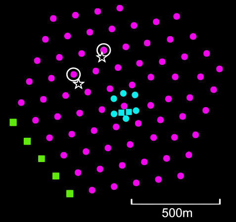</p> <div style="font-size: 18px; line-height: 1.2; color: #ccc; margin-top: 4px">Where they happened (top view: strings, and the two events ☆)</div> </div> <div class="fragment fade-in" data-fragment-index="1" style="width: 100%"> <p>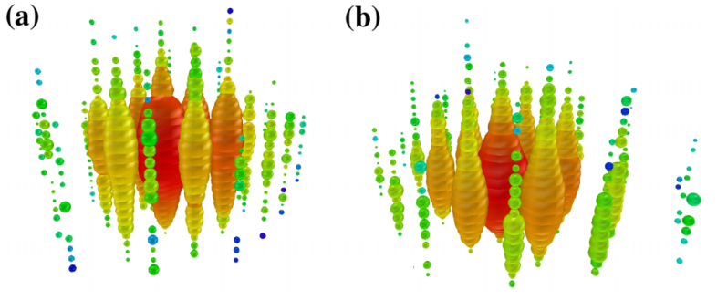</p> <div style="font-size: 18px; line-height: 1.2; color: #ccc; margin-top: 4px">(a) Bert, (b) Ernie: each sphere a sensor</div> </div> </div> <div class="credit" style="font-size: 0.45em; text-align: center">[IceCube, <a href="https://doi.org/10.1103/PhysRevLett.111.021103">Phys. Rev. Lett. <b>111</b>, 021103 (2013)</a>]</div> <h4 style="margin: 16px 0 0 1em; padding-left: 0.8em; text-indent: -0.8em">• Two $\sim$1 PeV showers, found by accident</h4> <h4 class="fragment" data-fragment-index="1" style="margin: 0 0 0 1em; padding-left: 0.8em; text-indent: -0.8em">• Too energetic for the atmosphere (2.8$\sigma$)</h4> </div> <div class="fragment" data-fragment-index="2" style="width: 48%"> <h3 style="margin: 0 0 10px 0"><span style="color: cyan">2014</span> <b>A new sky</b></h3> <div class="r-stack" style="text-align: center; height: 560px"> <div class="fragment fade-out" data-fragment-index="3" style="width: 100%"> <p>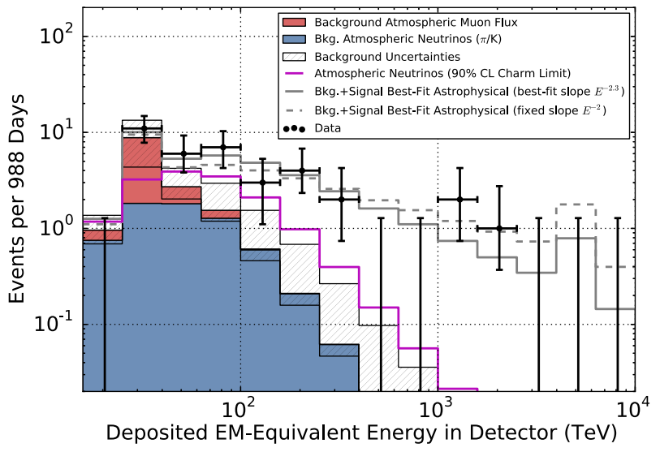</p> <div style="font-size: 18px; line-height: 1.2; color: #ccc; margin-top: 4px">Events vs energy: data (points) above the atmosphere (shaded)</div> </div> <div class="fragment fade-in" data-fragment-index="3" style="width: 100%"> <p>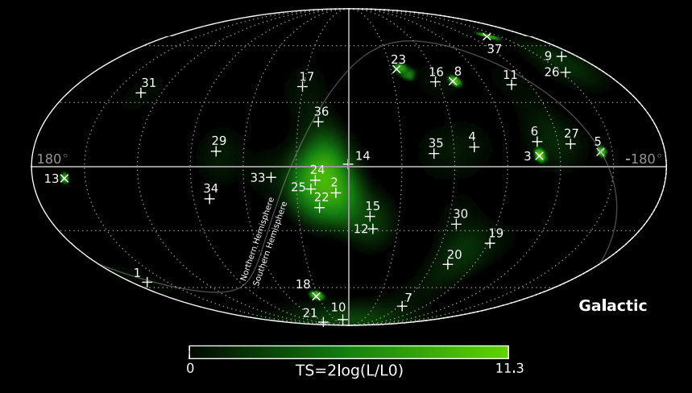</p> <div style="font-size: 18px; line-height: 1.2; color: #ccc; margin-top: 4px">Where they came from: no clustering</div> </div> </div> <div class="credit" style="font-size: 0.45em; text-align: center">[IceCube, <a href="https://doi.org/10.1103/PhysRevLett.113.101101">Phys. Rev. Lett. <b>113</b>, 101101 (2014)</a>]</div> <h4 style="margin: 16px 0 0 1em; padding-left: 0.8em; text-indent: -0.8em">• 37 events, far above the atmosphere: 5.7$\sigma$</h4> <h4 class="fragment" data-fragment-index="3" style="margin: 0 0 0 1em; padding-left: 0.8em; text-indent: -0.8em">• From all over the sky: <br><i>dawn of neutrino astronomy</i></h4> <h4 class="fragment" style="margin: 0 0 0 1em; padding-left: 0.8em; text-indent: -0.8em">• As many as predicted from cosmic rays (1999)</h4> </div> </div>
# 2017: the first named source – _Multi-Messenger Astronomy_ <div style="text-align: center; float: right; width: 50%"> <div class="r-stack"> <div class="fragment fade-out" data-fragment-index="1" style="width: 100%"> <p>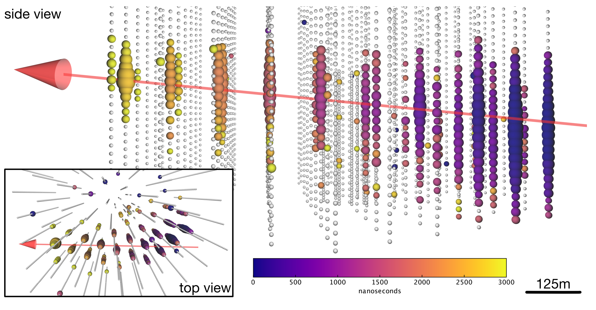</p> <div style="font-size: 16px; line-height: 1.2"><font size="3" class="credit">IceCube-170922A: a muon track (colour = time) [IceCube <i>et al.</i>, <a href="https://doi.org/10.1126/science.aat1378">Science <b>361</b>, eaat1378 (2018)</a>]</font></div> </div> <div class="fragment fade-in-then-out" data-fragment-index="1" style="width: 100%"> <p>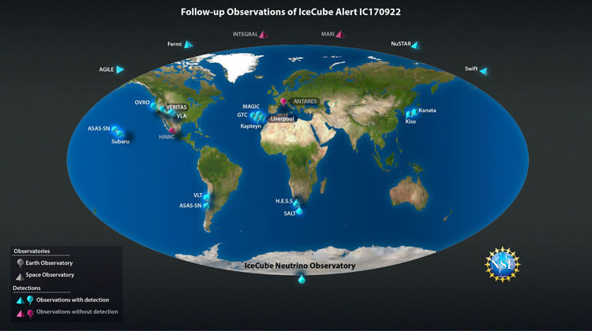</p> <div style="font-size: 16px; line-height: 1.2"><font size="3" class="credit">The follow-up: ~20 observatories [Nicolle R. Fuller/NSF/IceCube]</font></div> </div> <div class="fragment fade-in" data-fragment-index="2" style="width: 100%"> <br> <p>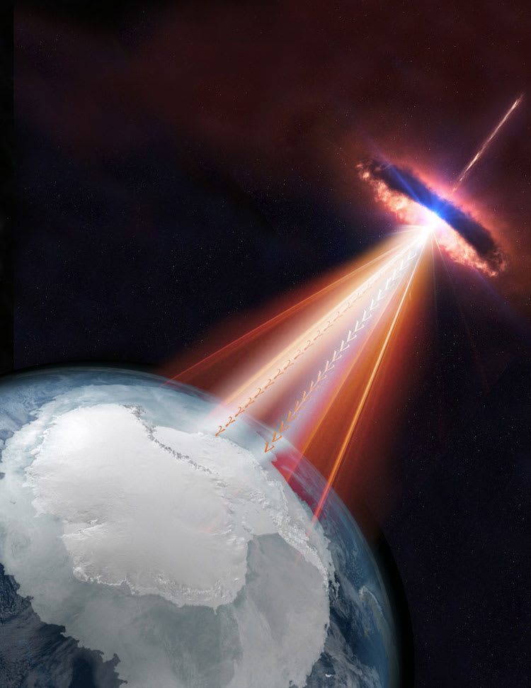</p> <div style="font-size: 16px; line-height: 1.2"><font size="3" class="credit">A blazar, jet pointed at Earth (artist's impression) [IceCube/NASA]</font></div> </div> </div> </div> <div style="text-align: left; float: left; width: 48%; font-size: 1.3em"> <br> <div style="margin-bottom: 50px"> <h3 style="margin: 0 0 6px 0"><span style="color: cyan">22 Sep 2017</span> <b>A 290 TeV neutrino</b></h3> <h4 style="margin: 0"> • A long track: a good direction</h4> <h4 style="margin: 0"> • Alert out to telescopes within a minute</h4> </div> <br> <div class="fragment" data-fragment-index="1" style="margin-bottom: 50px"> <h3 style="margin: 0 0 6px 0"><span style="color: cyan">Days later</span> <b>~20 telescopes look</b></h3> <h4 style="margin: 0"> • Fermi: a blazar flaring, right on the spot</h4> <h4 style="margin: 0"> • Then MAGIC: even higher-energy gamma rays</h4> </div> <br> <div class="fragment" data-fragment-index="2"> <h3 style="margin: 0 0 6px 0"><span style="color: cyan">TXS 0506+056</span> <b>The first named source</b></h3> <h4 style="margin: 0"> • A giant black hole's jet, 4 billion ly away</h4> <h4 style="margin: 0"> • It accelerates protons: a cosmic-ray source</h4> <h4 style="margin: 0"> • (But blazars make only a small part of the $\nu$ sky)</h4> <br> <div class="credit" style="font-size: 1.00em; margin-left: 2.2em"><a href="https://doi.org/10.1126/science.aat1378">Science <b>361</b>, 1378 (2018)</a><br> <a href="https://icecube.wisc.edu/news/press-releases/2018/07/icecube-neutrinos-point-to-long-sought-cosmic-ray-accelerator/">IceCube press release, 2018</a></div> </div> </div>
# 2022: a steady source from one galaxy <br> <div style="display: flex; justify-content: space-between; align-items: flex-end; gap: 40px; font-size: 1.5em"> <div style="width: 40%; text-align: center"> <p>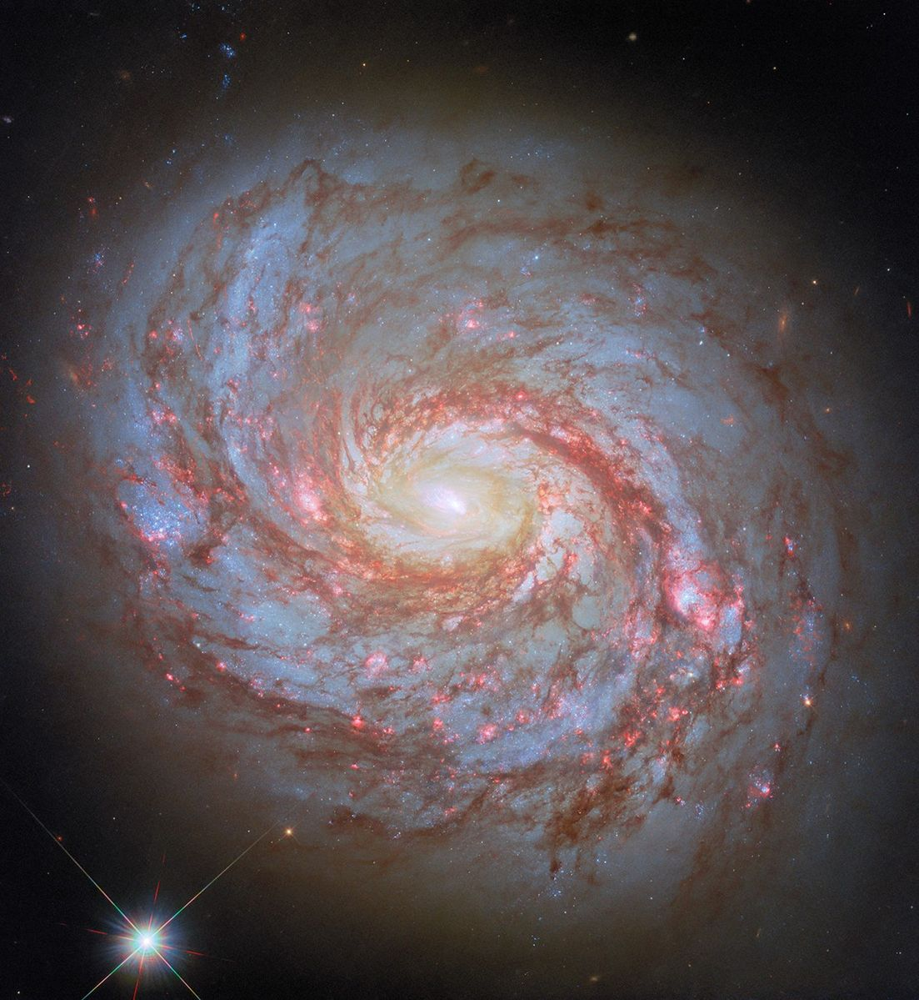</p> <div class="credit" style="font-size: 0.45em">[ESA/Hubble & NASA, L. Ho, D. Thilker]</div> <h4 style="margin: 10px 0 0 0">NGC 1068, an active galaxy<br>47 million light-years away</h4> </div> <div class="fragment" style="width: 58%; text-align: center"> <p>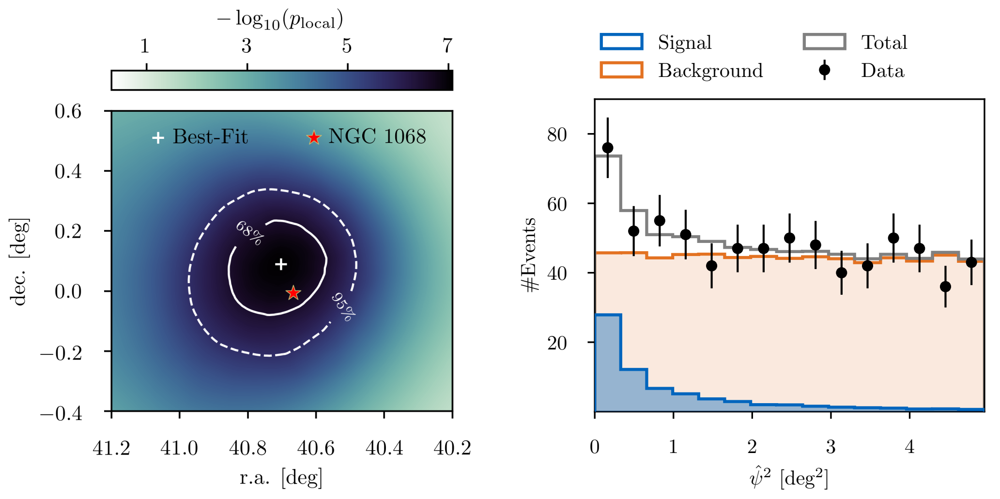</p> <div class="credit" style="font-size: 0.45em">Where the neutrinos point (left); the pile-up near NGC 1068 (right) [IceCube, <a href="https://doi.org/10.1126/science.abg3395">Science <b>378</b>, 538 (2022)</a>]</div> <h4 style="margin: 10px 0 0 0">~80 neutrinos in 9 years, from right there: 4.2$\sigma$</h4> </div> </div> <div style="text-align: center; font-size: 1.5em; margin-top: 30px"> <h4 class="fragment" style="margin: 0">Neutrinos, but no high-energy gamma rays: a hidden core</h4> <h4 class="fragment" style="margin: 0">More neutrinos than gamma rays in the sky: most sources are hidden, only neutrinos see them</h4> </div>
<div style="position: relative; height: 1000px"> <h1>2023: our Galaxy in neutrinos</h1> <div style="position: absolute; bottom: 10px; left: 0; width: 100%; text-align: center"> <div style="font-size: 1.5em"> <h4 style="margin: 0">The plane of the Milky Way, glowing in neutrinos: 4.5$\sigma$</h4> <div class="credit" style="font-size: 0.45em">[<a href="https://doi.org/10.1126/science.adc9818">Science <b>380</b>, 1338 (2023)</a>]</div> <h4 class="fragment" style="margin: 15px 0 0 0">Cosmic rays hitting the Galaxy's gas: the first image in anything but light</h4> </div> <h4 class="fragment" style="margin: 25px 0 0 0; font-size: 1.2em"><i>"... in neutrinos, the universe outshines the nearby sources in our own galaxy"</i> — Halzen</h4> <div class="credit" style="text-align: right; font-size: 0.45em; margin-top: 15px">Artist's composition. Image: IceCube Collaboration/U.S. NSF (Lily Le & Shawn Johnson)/ESO (S. Brunier)</div> </div> </div>
# Our Galaxy in neutrinos <div style="text-align: center; float: left; width: calc(62% + 80px); margin-left: -80px"> <br> <p>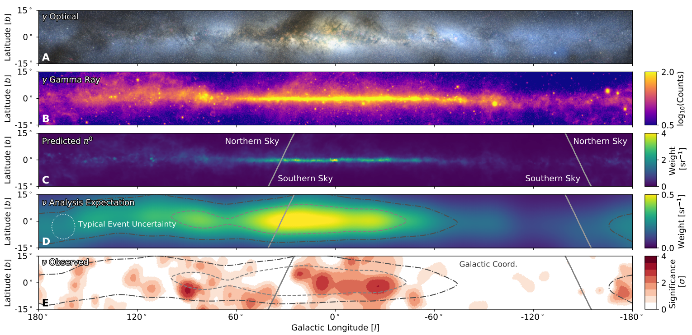</p> <div style="font-size: 16px; line-height: 1.2"><font size="3" class="credit">[IceCube, <a href="https://doi.org/10.1126/science.adc9818">Science <b>380</b>, 1338 (2023)</a>]</font></div> </div> <div style="text-align: left; float: right; width: 36%; font-size: 1.5em"> <br> <div style="margin-bottom: 30px"> <h3 style="margin: 0 0 6px 0"><span style="color: cyan">A, B</span> <b>Light, gamma rays</b></h3> <h4 style="margin: 0 0 8px 40px">• A: dust hides the centre</h4> <h4 style="margin: 0 0 0px 40px">• B: Fermi, above 1 GeV</h4> </div> <div class="fragment" style="margin-bottom: 30px"> <h3 style="margin: 0 0 6px 0"><span style="color: cyan">C, D</span> <b>Predicted $\nu$</b></h3> <h4 style="margin: 0 0 8px 40px">• Cosmic rays on gas</h4> <h4 style="margin: 0 0 0px 40px">• D: as IceCube would see it</h4> </div> <div class="fragment"> <h3 style="margin: 0 0 6px 0"><span style="color: cyan">E</span> <b>Observed: 4.5$\sigma$</b></h3> <h4 style="margin: 0 0 8px 40px">• <b>Where predicted: the plane</b></h4> <h4 style="margin: 0 0 8px 40px">• Flux: right ballpark</h4> <h4 style="margin: 0 0 8px 40px">• Cause: gas, or faint sources?</h4> <h4 style="margin: 0 0 0px 40px">• Too blurry to tell yet</h4> </div> </div>
# Particle physics with icecube <div style="text-align: center; float: right; width: 42%"> <p>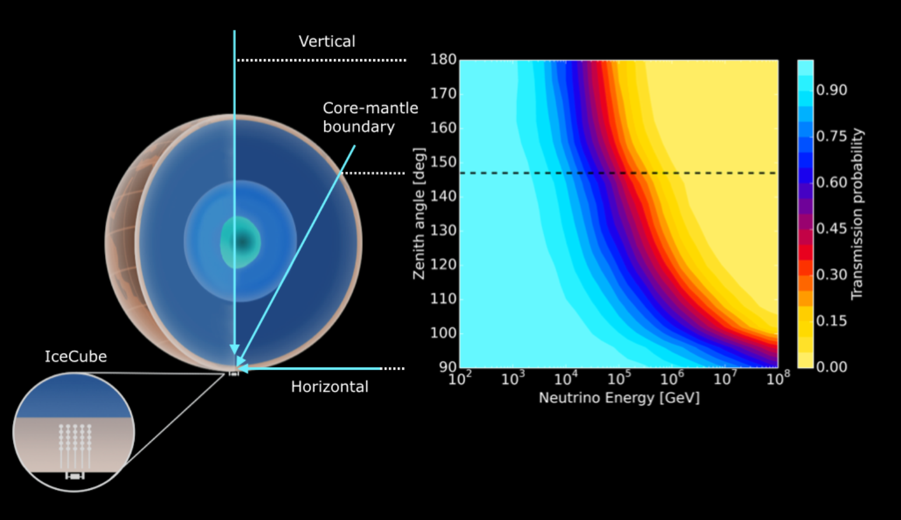</p> <div style="font-size: 16px; line-height: 1.2"><font size="3" class="credit">[IceCube, <a href="https://doi.org/10.1038/nature24459">Nature <b>551</b>, 596 (2017)</a>, Fig. 2]</font></div> </div> <div style="text-align: left; float: left; width: 56%; font-size: 1.5em"> <br> <div style="margin-bottom: 30px"> <h3 style="margin: 0 0 6px 0"><span style="color: cyan">Cross-section</span> <b>The Earth as a target</b></h3> <h4 style="margin: 0"> • 1000$\times$ accelerator energies: SM holds</h4> <div class="credit" style="font-size: 0.45em; margin-left: 2.2em">[<a href="https://doi.org/10.1038/nature24459">Nature <b>551</b>, 596 (2017)</a>]</div> </div> <div class="fragment" data-fragment-index="1" style="margin-bottom: 30px"> <h3 style="margin: 0 0 6px 0"><span style="color: cyan">Glashow resonance</span> <b>A 1960 prediction</b></h3> <h4 style="margin: 0"> • $\bar\nu_e + e^- \to W^-$ at 6.3 PeV</h4> <div class="credit" style="font-size: 0.45em; margin-left: 2.2em">[<a href="https://doi.org/10.1038/s41586-021-03256-1">Nature <b>591</b>, 220 (2021)</a>]</div> </div> <div class="fragment" data-fragment-index="2"> <h3 style="margin: 0 0 6px 0"><span style="color: cyan">Beyond</span> <b>And more</b></h3> <h4 style="margin: 0"> • Oscillations, supernova watch</h4> </div> </div> <div class="fragment" data-fragment-index="1" style="clear: both; padding-top: 16px; text-align: center"> <p>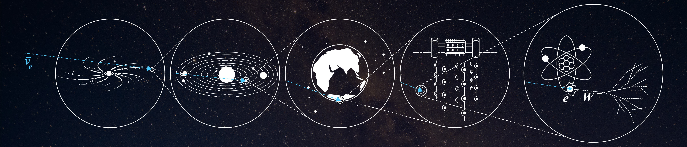</p> <div style="font-size: 16px; line-height: 1.2"><font size="3" class="credit">[Yuya Makino, IceCube/NSF; <a href="https://doi.org/10.1038/s41586-021-03256-1">Nature <b>591</b>, 220 (2021)</a>]</font></div> </div>
# Dark Matter Detection ### Indirect direct detection <div class="fragment" data-fragment-index="2" style="text-align: center; float: right; width: 50%"> <p>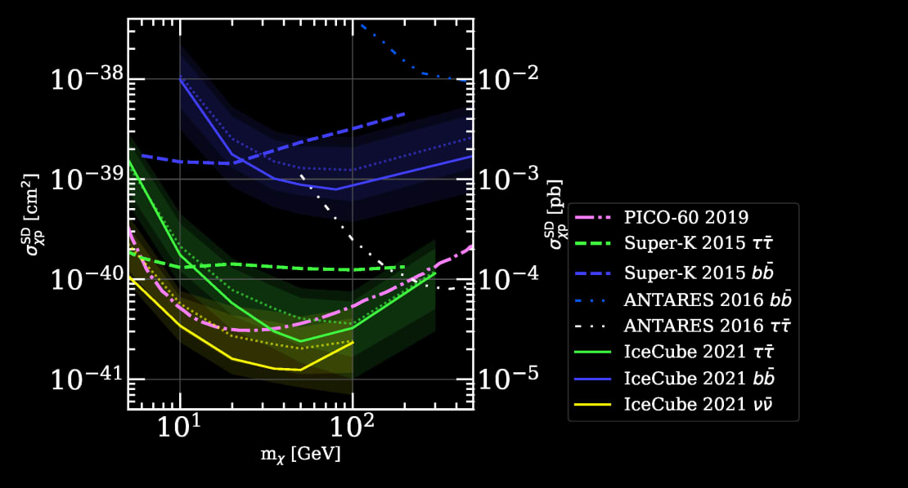</p> <div style="font-size: 16px; line-height: 1.2"><font size="3" class="credit">[IceCube Collaboration, <a href="https://doi.org/10.1103/PhysRevD.105.062004">Phys. Rev. D <b>105</b>, 062004 (2022)</a>]</font></div> </div> <div style="text-align: left; float: left; width: calc(48% + 50px); margin-left: -50px; font-size: 1.5em"> <div class="fragment" data-fragment-index="1" style="margin-bottom: 30px"> <h3 style="margin: 0 0 6px 0"><span style="color: cyan">The Sun</span> <b>A dark matter trap</b></h3> <h4 style="margin: 0 0 0 1em; padding-left: 0.8em; text-indent: -0.8em">• Dark matter hits protons and gets caught</h4> <h4 style="margin: 0 0 0 1em; padding-left: 0.8em; text-indent: -0.8em">• It piles up and annihilates: only $\nu$ escape</h4> </div> <div class="fragment" data-fragment-index="2" style="margin-bottom: 30px"> <h3 style="margin: 0 0 6px 0"><span style="color: cyan">Spin</span> <b>Target: Hydrogen (protons)</b></h3> <h4 style="margin: 0 0 0 1em; padding-left: 0.8em; text-indent: -0.8em">• Among the best spin-dependent limits for GeV-scale</h4> <h4 style="margin: 0 0 0 1em; padding-left: 0.8em; text-indent: -0.8em">• Limits on $\langle\sigma v\rangle$ from the halo</h4> </div> <!-- <div class="fragment" style="margin-bottom: 25px"> <h3 style="margin: 0 0 6px 0"><span style="color: cyan">The Galaxy</span> <b>Halo and centre</b></h3> <h4 style="margin: 0"> • Limits on $\langle\sigma v\rangle$ from the halo</h4> </div> --> <!-- <div class="fragment" style="margin-bottom: 25px"> <h3 style="margin: 0 0 6px 0"><span style="color: cyan">PeV</span> <b>Heavy, decaying dark matter</b></h3> <h4 style="margin: 0"> • $\tau \gtrsim 10^{27}$ s: $10^9\times$ the age of the Universe</h4> </div> --> <div style="text-align: center"> <div style="font-size: 16px; line-height: 1.2"><font size="3" class="credit">[IceCube]</font></div> </div> </div>
# Geophysics <div style="text-align: center; float: right; width: 46%"> <div style="font-size: 16px; line-height: 1.2"><font size="3" class="credit">[IceCube, <a href="https://doi.org/10.3189/2013JoG13J068">J. Glaciol. <b>59</b>, 1117 (2013)</a>]</font></div> <div class="fragment" data-fragment-index="3"> <div style="font-size: 16px; line-height: 1.2"><font size="3" class="credit">[Donini, Palomares-Ruiz & Salvado, <a href="https://doi.org/10.1038/s41567-018-0319-1">Nature Phys. <b>15</b>, 37 (2019)</a>]</font></div> </div> </div> <div style="text-align: left; float: left; width: 52%; font-size: 1.5em"> <div style="margin-bottom: 34px"> <h3 style="margin: 0 0 6px 0"><span style="color: cyan">Dust</span> <b>A climate record as byproduct</b></h3> <h4 style="margin: 0 0 0 40px; font-size: 0.8em">• Lasers down the drill holes: 100,000 years</h4> </div> <div class="fragment" data-fragment-index="1" style="margin-bottom: 34px"> <h3 style="margin: 0 0 6px 0"><span style="color: cyan">74,000 yr</span> <b>Supervolcano ash</b></h3> <h4 style="margin: 0 0 0 40px; font-size: 0.8em">• Ash from the Toba super-eruption?</h4> <h4 style="margin: 0 0 0 40px; font-size: 0.8em">• Biggest eruption in 2 million years</h4> </div> <div class="fragment" data-fragment-index="2" style="margin-bottom: 34px"> <h3 style="margin: 0 0 6px 0"><span style="color: cyan">10 m/yr</span> <b>The ice flows</b></h3> <h4 style="margin: 0 0 0 40px; font-size: 0.8em">• The whole detector drifts with the ice</h4> <h4 style="margin: 0 0 0 40px; font-size: 0.8em">• Twice as much light along the flow as across it</h4> <h4 style="margin: 0 0 0 40px; font-size: 0.8em">• Flow aligns crystals: birefringance measured, 2 km</h4> <div class="credit" style="font-size: 0.45em; margin-left: 2.2em">[IceCube, <a href="https://doi.org/10.5194/tc-18-75-2024">The Cryosphere <b>18</b>, 75 (2024)</a>]</div> </div> <div class="fragment" data-fragment-index="3"> <h3 style="margin: 0 0 6px 0"><span style="color: cyan">Earth</span> <b>Weighed with neutrinos</b></h3> <h4 style="margin: 0 0 0 40px; font-size: 0.8em">• Above ~10 TeV, the Earth absorbs $\nu$</h4> <h4 style="margin: 0 0 0 40px; font-size: 0.8em">• Paths through the core lose the most</h4> <h4 style="margin: 0 0 0 40px; font-size: 0.8em">• Core denser than mantle, no gravity used</h4> <div class="credit" style="font-size: 0.45em; margin-left: 2.2em">[Donini, Palomares-Ruiz & Salvado, <a href="https://doi.org/10.1038/s41567-018-0319-1">Nature Phys. <b>15</b>, 37 (2019)</a>]</div> </div> </div>
# What comes next <div style="text-align: center; float: right; width: 54%"> <br> <div style="font-size: 16px; line-height: 1.2"><font size="3" class="credit">[DESY, Science Communication Lab]</font></div> </div> <div style="text-align: left; float: left; width: 44%; font-size: 1.5em"> <br> <div style="margin-bottom: 30px"> <h3 style="margin: 0 0 6px 0"><span style="color: cyan">Gen2</span> <b>8 km$^3$, plus radio</b></h3> <h4 style="margin: 0"> • Halzen: <i>"I'm working on a proposal"</i></h4> </div> <div class="fragment" data-fragment-index="2" style="margin-bottom: 30px"> <h3 style="margin: 0 0 6px 0"><span style="color: cyan">puzzle</span> </h3> <h4 style="margin: 0"> • KM3NeT saw 220 PeV; IceCube, none</h4> <div class="credit" style="font-size: 0.45em; margin-left: 2.2em">[KM3-230213A: KM3NeT, <a href="https://doi.org/10.1038/s41586-024-08543-1">Nature <b>638</b>, 376 (2025)</a>]</div> </div> <div class="fragment" data-fragment-index="3"> <h3 style="margin: 0 0 6px 0"><span style="color: cyan">Lab</span> <b>The mass questions</b></h3> <h4 style="margin: 0"> • JUNO, DUNE, Hyper-K, LEGEND</h4> </div> <div class="fragment" data-fragment-index="1" style="text-align: center; margin-top: 30px"> <div style="font-size: 16px; line-height: 1.2"><font size="3" class="credit">[Godot13 / Wikimedia Commons]</font></div> <h4 style="margin: 6px 0 0 0; font-size: 0.67em">Gentoo</h4> </div> </div>
# The neutrino fog ### Dark matter detectors are now neutrino detectors <div style="text-align: center; float: right; width: 42%"> <div style="font-size: 16px; line-height: 1.2"><font size="3" class="credit">[O'Hare, GitHub/DirectDetectionPlots]</font></div> <div class="fragment" data-fragment-index="1"> <div style="font-size: 16px; line-height: 1.2"><font size="3" class="credit">[Adapted: Maity, Bœhm, <a href="https://arxiv.org/abs/2409.04385">Phys. Rev. D <b>112</b>, 053001 (2025)</a>]</font></div> </div> </div> <div style="text-align: left; float: left; width: 56%; font-size: 1.5em"> <br> <div style="margin-bottom: 30px"> <h3 style="margin: 0 0 6px 0"><span style="color: cyan">Fog</span> <b>Solar $\nu$ in xenon</b></h3> <h4 style="margin: 0"> • Below the fog, a WIMP looks like a $\nu$</h4> <div class="credit" style="font-size: 0.45em; margin-left: 2.2em">[<a href="https://doi.org/10.1103/PhysRevLett.133.191002">PRL <b>133</b>, 191002</a>, <a href="https://doi.org/10.1103/PhysRevLett.133.191001">191001 (2024)</a>; <a href="https://doi.org/10.1103/jvqf-njpj">PRL <b>137</b>, 091806 (2026)</a>]</div> </div> <br> <div class="fragment" data-fragment-index="1" style="margin-bottom: 30px"> <h3 style="margin: 0 0 6px 0"><span style="color: cyan">2026</span> <b>$pp$ neutrinos at 5$\sigma$</b></h3> <h4 style="margin: 0"> • The lowest threshold of any $\nu$ detection</h4> <h4 style="margin: 0"> • Allow <i>low-energy</i> test of electroweak theory</h4> <div class="credit" style="font-size: 0.45em; margin-left: 2.2em">[XENONnT, <a href="https://arxiv.org/abs/2608.29450">arXiv:2608.29450</a>]</div> </div> <br> <div class="fragment" data-fragment-index="2"> <h3 style="margin: 0 0 6px 0"><span style="color: cyan">Atoms</span> <b>Needs atomic physics</b></h3> <h4 style="margin: 0"> • Relativistic, many-body effects important</h4> <!-- <div class="credit" style="font-size: 0.45em; margin-left: 2.2em">[Chen <i>et al.</i>, <a href="https://doi.org/10.1016/j.physletb.2017.10.029">Phys. Lett. B <b>774</b>, 656 (2017)</a>]</div> --> </div> </div>
# Conclusion <br> <div style="text-align: left; float: left; width: 58%"> <br> <div style="font-size: 1.25em"> <h3 style="margin: 0 0 6px 0"><span style="color: cyan">Know</span> <b>The sky is full of high-energy neutrinos</b></h3> <h4 style="margin: 0"> • As many as the cosmic rays predicted, from everywhere</h4> <h4 style="margin: 0"> • First sources named: a blazar jet, a hidden galaxy core</h4> <h4 style="margin: 0"> • Most sources have no light: only neutrinos escape</h4> <h4 style="margin: 0"> • Our Galaxy is faint: the big sources are elsewhere</h4> <h4 style="margin: 0 0 30px 0"> • Standard Model holds at 1000$\times$ accelerator energies</h4> <h3 style="margin: 0 0 6px 0"><span style="color: cyan">Open</span> <b>Which objects make most of them?</b></h3> <h4 style="margin: 0 0 30px 0"> • And nothing seen yet from the $10^{20}$ eV cosmic rays</h4> <h3 style="margin: 0 0 6px 0"><span style="color: cyan">Next</span> <b>Gen2: 8$\times$ the volume, plus radio for EeV</b></h3> <h4 style="margin: 0"> • A fleet: KM3NeT, Baikal; in the lab, the neutrino mass</h4> </div> <br> <h4 style="margin: 0">Physics Colloquium, 6 November 2026</h4> <br> <h4 style="margin: 0">Benjamin M. Roberts</h4> <p style="margin: 0"><i>University of Queensland, Australia</i></p> </div> <div style="text-align: center; float: right; width: 40%"> <br> <div style="font-size: 16px; line-height: 1.2"><font size="3" class="credit">[<a href="https://news.wisc.edu/university-of-wisconsin-madison-professor-francis-halzen-named-2026-nobel-laureate-in-physics/">news.wisc.edu</a>]</font></div> <div style="margin: 24px 0 0 0"> <br><Br> <h4 style="margin: 0; font-size: 1.2em"><i>"Physics is a miserable career, <span class="fragment">unless you are obsessed by it"</span></i></h4> <div class="credit" style="font-size: 0.6em">— Francis Halzen</div> </div> </div>